<!doctype html>
<html lang="en">
<head>
  <meta charset="utf-8">
  <meta name="viewport" content="width=device-width, initial-scale=1">
  <title>arxiv digest — 2026-07-23</title>
  <style>
:root {
  --bg: #ffffff;
  --fg: #1f2328;
  --muted: #59636e;
  --border: #d0d7de;
  --card: #f6f8fa;
  --link: #0969da;
}
body {
  max-width: 980px;
  margin: 0 auto;
  padding: 2rem 1rem 5rem;
  font-family: -apple-system, BlinkMacSystemFont, "Segoe UI", Helvetica, Arial, sans-serif;
  line-height: 1.55;
  color: var(--fg);
  background: var(--bg);
}
a { color: var(--link); }
img { max-width: 100%; height: auto; }
pre, code { background: var(--card); border-radius: 6px; }
pre { padding: 1rem; overflow-x: auto; }
blockquote { border-left: 4px solid var(--border); padding-left: 1rem; color: var(--muted); }
details { margin: 0.6rem 0; }
summary { cursor: pointer; font-weight: 600; }
.paper-figures-scroll {
  display: flex;
  gap: 1rem;
  overflow-x: auto;
  overscroll-behavior-x: contain;
  padding: 0.75rem 0.25rem 1rem;
  margin: 1rem 0 1.25rem;
  border-top: 1px solid var(--border);
  border-bottom: 1px solid var(--border);
  scroll-snap-type: x proximity;
}
.paper-figure-card {
  flex: 0 0 min(260px, 72vw);
  scroll-snap-align: start;
  background: var(--card);
  border: 1px solid var(--border);
  border-radius: 12px;
  padding: 0.55rem;
}
.paper-figure-card img {
  display: block;
  width: 100%;
  max-height: 240px;
  object-fit: contain;
  background: white;
  border-radius: 8px;
}
.paper-figure-caption {
  display: block;
  margin-top: 0.5rem;
  color: var(--muted);
  font-size: 0.85rem;
}
.figure-strip-hint {
  color: var(--muted);
  font-size: 0.9rem;
  margin-bottom: -0.3rem;
}
</style>
  <!-- MathJax: renders $...$ inline math and $$...$$ display math, plus
       \(...\) and \[...\]. Loaded from the official CDN; works offline
       once cached. Configured to skip code/pre blocks so arxiv IDs that
       look like dollar amounts don't get mangled. -->
  <script>
    window.MathJax = {
      tex: {
        inlineMath: [['$', '$'], ['\\(', '\\)']],
        displayMath: [['$$', '$$'], ['\\[', '\\]']],
        processEscapes: true,
        processEnvironments: true
      },
      options: {
        skipHtmlTags: ['script', 'noscript', 'style', 'textarea', 'pre', 'code'],
        ignoreHtmlClass: 'tex2jax_ignore',
        processHtmlClass: 'tex2jax_process'
      }
    };
  </script>
  <script id="MathJax-script" async
    src="https://cdn.jsdelivr.net/npm/mathjax@3/es5/tex-chtml.js"></script>
</head>
<body>
<header style="background-color: #333; color: white; padding: 15px; margin-bottom: 20px;">
  <h1 style="margin: 0; font-size: 24px;">
    <a href="https://ochelpan.github.io/arXiv_clean/" style="color: white; text-decoration: none;">Main</a>
  </h1>
</header>

<h1>Daily arXiv Report</h1>

<hr>
<p>
<a href="index.html">← Index</a>
 · <a href="papers_01.html">← Previous</a> · <a href="papers_03.html">Next →</a>
</p>
<hr>

<h2>Papers 21–40</h2>
<p><a id="paper-2607.18392"></a></p>
<h3 id="calculus-of-robinet-completely-positive-reconstruction-of-time-averaged-diffusive-quantum-trajectories"><a href="http://arxiv.org/abs/2607.18392v1">Calculus of Robinet: completely positive reconstruction of time-averaged diffusive quantum trajectories</a></h3>
<p><strong>Authors:</strong> Hector Hutin, Antoine Tilloy<br>
<strong>Type:</strong> theory · <strong>Category:</strong> other · <strong>PDF:</strong> <a href="https://arxiv.org/pdf/2607.18392v1">https://arxiv.org/pdf/2607.18392v1</a><br>
<strong>Analysis basis:</strong> full PDF text, analyzed in chunks
<strong>Topic relevance:</strong> 🔥 <code>methods for driven-dissipative</code> <strong>4/5</strong> · 🔥 <code>quantum measurements</code> <strong>4/5</strong> · <code>measurement-induced transitions</code> <strong>3/5</strong> · <code>non-equilibrium dynamics</code> <strong>2/5</strong> · <code>Keldysh / 2PI / non-Gaussian methods</code> <strong>1/5</strong> · <code>correlated / nonlocal dissipation</code> <strong>1/5</strong> · <code>driven-dissipative phase transition</code> <strong>1/5</strong></p>
<div class="figure-strip-hint">↔ Scroll figures horizontally</div>
<div class="paper-figures-scroll">
<figure class="paper-figure-card">
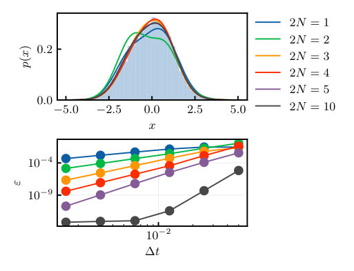
<figcaption class="paper-figure-caption"><b>Fig 1.</b> FIG. 1. (a) Histogram of the integrated measurement record (blue) and probability density p of the measurement record obtained at various orders between 2N = 1 and 2N = 10 and ∆t = 0.05. The first orders are visibly wrong but orders 2N = 5 and 2N = 10 are almost superimposed and agree with the histogram. (b) L2 distance ε between the probability density obtained at order 2N and the reference distribution obtained with the cascaded formalism, as a function of ∆t for various values of 2N.</figcaption>
</figure>
<figure class="paper-figure-card">
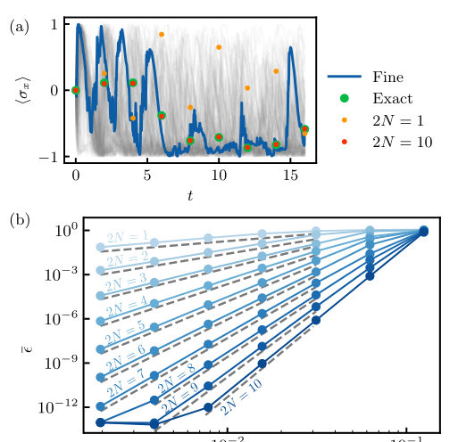
<figcaption class="paper-figure-caption"><b>Fig 2.</b> FIG. 2. (a) Expectation value ⟨σx⟩as a function of time for fine-grained trajectory (blue and gray), exact coarse tra- jectory (exact Robinet state, green) and approximate coarse trajectory (approximate Robinet state of order 1, orange, and 10, red). (b) Mean geometric error ϵ as a function of the time step ∆t for order 2N = 1 (lighter blue) to 2N = 10 (darker blue)</figcaption>
</figure>
<figure class="paper-figure-card">
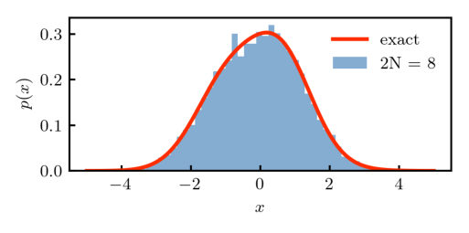
<figcaption class="paper-figure-caption"><b>Fig 3.</b> FIG. 3. Histogram of integrated measurement record (blue) and probability density p of the measurement record obtained at order 2N = 10 and ∆t = 0.05 (orange).</figcaption>
</figure>
<figure class="paper-figure-card">
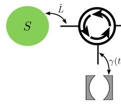
<figcaption class="paper-figure-caption"><b>Fig 4.</b> FIG. 4. Schematic of the cascaded system used to simulate the measurement back-action. The system S is coupled to a waveguide, whose output is injected into a cavity via a circulator</figcaption>
</figure>
</div>

<p><strong>Summary.</strong> This paper tackles the challenge of reconstructing true quantum states from digitized measurement data by defining and calculating the 'Robinet state'. The authors introduce a novel mathematical technique based on unitary dilation that yields an exactly completely positive evolution map, allowing for highly accurate simulation of time-averaged quantum trajectories.</p>
<p><strong>Why it may be interesting.</strong> This is highly relevant for theoretical physicists working on open quantum systems or quantum optics, as it provides a rigorous, computationally tractable method to handle the non-Markovian effects inherent in real-world continuous quantum measurements.</p>
<details>
<summary>Detailed structure</summary>
<p><strong>Main problem.</strong> The core problem is accurately reconstructing quantum states from continuous measurement records that are inherently digitized, leading to information loss due to finite time binning ($\Delta t$).</p>
<p><strong>Main result.</strong> The authors developed a novel numerical discretization scheme for the 'Robinet state' reconstruction map that is provably completely positive and accurate to arbitrarily high orders in $\Delta t$ without needing external solvers.</p>
<p><strong>Method.</strong> The method involves constructing an explicit, completely positive evolution map by employing a unitary dilation of the stochastic master equation into an augmented system plus transmission line setup.</p>
<p><strong>Model / system.</strong> The model describes a finite-dimensional quantum system undergoing open evolution governed by a Hamiltonian $H$ and measured via an operator $L$. The dynamics are analyzed using the Stochastic Master Equation (SME) framework.</p>
<p><strong>Key observables.</strong> The Robinet state ($ar{
ho}_n$), which is the time-averaged density matrix conditioned on the discrete measurement record $\{I_k\}$.</p>
<p><strong>Important parameters / regimes.</strong> The time bin size $\Delta t$, and the measurement efficiency $\eta$.</p>
<p><strong>Assumptions / limitations.</strong> The derivation relies on extending the stochastic master equation via a unitary dilation, which is systematic but involves truncating infinite series for practical computation.</p>
<p><strong>Figures summary.</strong> No explicit figure summaries are available; the notes indicate extensive mathematical derivations and tabulated coefficients related to time-step expansions.</p>
<p><strong>Paper structure.</strong> The paper progresses from defining the information loss problem (Robinet state) to introducing the unitary dilation formalism. It then details deriving the completely positive map $K_{In}$ through this dilation, verifying its accuracy on challenging examples, and finally providing physical insights by comparing results with prior work.</p>
</details>
<details>
<summary>Abstract</summary>
<p>Truly continuous quantum trajectories, obtained from homodyne or heterodyne readouts, can only ever be reconstructed approximately. The continuous measurement signal, needed for exact reconstruction, is averaged over bins of finite time $Δt$ during any analog to digital conversion step. The best reconstruction possible, knowing only this discrete record, was introduced recently and dubbed the Robinet state. In this article, we show how the Robinet state can be computed with a numerical discretization scheme that is completely positive, accurate to arbitrarily high order in $Δt$, and that does not rely on any other external solver. Our derivation relies on a dilation of the stochastic master equation into a system + transmission line setup, constructed in such a way that measuring what we call the "zero mode" of the line yields the Robinet state. We test the method on a challenging example with random Hamiltonian and jump operator, and verify its accuracy up to order $10$. Apart from its numerical interest, our approach provides a wealth of physical insights, extending in particular recent results on purity obtained by Wonglakhon, Chantasri, and Wiseman, that would be difficult to obtain in any other way.</p>
</details>
<p><sub><a href="#top">↑ back to top</a></sub></p>

<p><a id="paper-2607.18938"></a></p>
<h3 id="coherent-disorder-driven-complexity-transitions-in-a-quantum-advantage-architecture"><a href="http://arxiv.org/abs/2607.18938v1">Coherent-disorder-driven complexity transitions in a quantum-advantage architecture</a></h3>
<p><strong>Authors:</strong> Sung-Bin B. Lee, Chae-Yeun Park, Changhun Oh, Seung-Sup B. Lee<br>
<strong>Type:</strong> theory · <strong>Category:</strong> quantum information and computing · <strong>PDF:</strong> <a href="https://arxiv.org/pdf/2607.18938v1">https://arxiv.org/pdf/2607.18938v1</a><br>
<strong>Analysis basis:</strong> full PDF text, analyzed in chunks
<strong>Topic relevance:</strong> 🔥 <code>methods for driven-dissipative</code> <strong>4/5</strong> · <code>driven-dissipative phase transition</code> <strong>3/5</strong> · <code>entanglement &amp; information structure</code> <strong>3/5</strong> · <code>non-equilibrium universality</code> <strong>2/5</strong> · <code>analog quantum simulation</code> <strong>1/5</strong> · <code>correlated / nonlocal dissipation</code> <strong>1/5</strong> · <code>non-equilibrium dynamics</code> <strong>1/5</strong></p>
<div class="figure-strip-hint">↔ Scroll figures horizontally</div>
<div class="paper-figures-scroll">
<figure class="paper-figure-card">
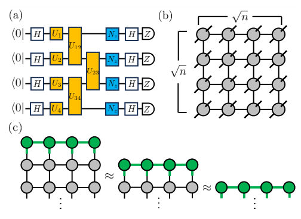
<figcaption class="paper-figure-caption"><b>Fig 1.</b> FIG. 1. (a) An instantaneous quantum polynomial-time (IQP) circuit consists of single- and two-qubit gates (Ui, Uij) diagonal in the computational basis, between the two layers of Hadamard (H) gates. We also consider single-qubit dephasing noise channels (Nz) of strength ε. (b) The density operator for the circuit on a √n × √n square lattice can be expressed as a projected entangled-pair operator (PEPO) on the same lattice, which has two physical legs per site and bond dimensions up to four. When there is no dephasing (ε = 0), we use a projected entangled-pair state (PEPS) that has one physical leg per site and bond dimensions up to two. (c) A square-lattice tensor network (gray), given by...</figcaption>
</figure>
<figure class="paper-figure-card">
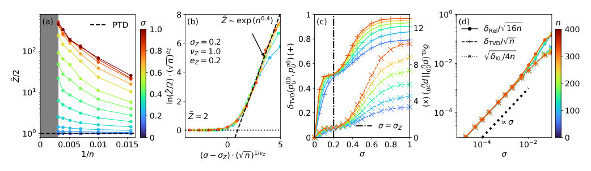
<figcaption class="paper-figure-caption"><b>Fig 2.</b> FIG. 2. (a) The rescaled collision probability ˜Z as a function of 1/n, where line colors indicate disorder strength σ. The dotted line marks the PTD value ˜Z = 2. (b) Finite-size scaling (FSS) collapse of ˜Z(n, σ). The dotted and dashed lines represent the small- and large-argument asymptotes. (c, d) Statistical distances between the bitstring probability with disorder and no dephasing, pσ0 U (x), and the ideal case, p00 U (x). (c) The TVD δTVD (+’s) and KLD δKL (×’s) as functions of σ on a linear scale. The vertical dash-dotted line marks σ = σZ = 0.2. (d) Rescaled δTVD, δKL, and relative error δRel as functions of σ on a log scale. In panels (b)–(d), colors encode the number of qubits n...</figcaption>
</figure>
<figure class="paper-figure-card">
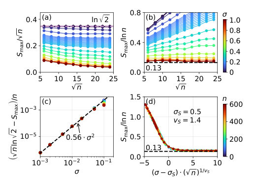
<figcaption class="paper-figure-caption"><b>Fig 3.</b> FIG. 3. (a), (b) Maximum BMPS entanglement entropy Smax encoun- tered during the tensor-network contraction for computing pσ0 U (0); colors encode σ. The dashed lines in panels (a) and (b) mark, re- spectively, Smax = √n ln √</figcaption>
</figure>
<figure class="paper-figure-card">
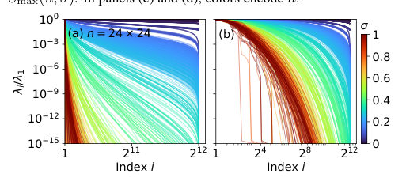
<figcaption class="paper-figure-caption"><b>Fig 4.</b> FIG. 4. BMPS singular-value spectra at the bond where Smax is attained, plotted on (a) log-linear and (b) log-log scales. The singular values {λi}2 √n/2 i=1 are sorted in descending order and rescaled by the largest value λ1. Each line represents one circuit instance, and colors encode the disorder strength σ. For σ &gt; σS ≃0.5, the spectra decay exponentially, with only a small fraction of singular values remaining above the double-precision floor.</figcaption>
</figure>
<figure class="paper-figure-card">
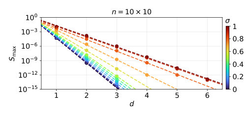
<figcaption class="paper-figure-caption"><b>Fig 5.</b> FIG. 5. The maximum BMPS entanglement entropy Smax encountered when contracting the tensor network for imaginary-time evolution U = e−dH, where H is the Ising Hamiltonian that generates the IQP architecture. Colors encode σ on a linear scale.</figcaption>
</figure>
</div>

<p><strong>Summary.</strong> This paper analyzes how coherent spatial disorder and dephasing affect the computational hardness of quantum random sampling on a lattice architecture. Using advanced tensor-network simulations, the authors demonstrate that increasing disorder causes predictable crossovers in statistical properties, leading to a transition from classically hard (anticoncentrated) to easily simulable regimes. This provides crucial theoretical benchmarks for assessing near-term quantum hardware performance.</p>
<p><strong>Why it may be interesting.</strong> The work provides quantitative error-budget bounds for near-term quantum devices by mapping physical noise (disorder/dephasing) onto measurable computational complexity transitions using established tensor network diagnostics.</p>
<details>
<summary>Detailed structure</summary>
<p><strong>Main problem.</strong> The study investigates how coherent spatial disorder affects the computational complexity and practical simulability of Quantum Random Sampling (QRS) using IQP circuits.</p>
<p><strong>Main result.</strong> Increasing disorder drives two crossovers: one where the output distribution loses anticoncentration, and another where the tensor-network simulation cost drops from exponential to polynomial in the large system limit.</p>
<p><strong>Method.</strong> The analysis employs exact tensor-network simulations (PEPS/PEPO) combined with finite-size scaling techniques applied to statistical measures like collision probability and quantum fidelity metrics.</p>
<p><strong>Model / system.</strong> The model is a square-lattice Instantaneous Quantum Polynomial-Time (IQP) architecture subject to two-qubit gate-angle disorder ($\sigma$) and single-qubit dephasing noise ($\epsilon$).</p>
<p><strong>Key observables.</strong> Rescaled collision probability ($  ilde{Z}$), Total Variation Distance ($\delta_{TVD}$), Kullback–Leibler divergence ($\delta_{KL}$), and maximum entanglement ($S_{\max}$).</p>
<p><strong>Important parameters / regimes.</strong> Disorder strength ($\sigma$), dephasing rate ($\epsilon$), system size ($n$), and critical crossover points ($\sigma_Z, \sigma_S$).</p>
<p><strong>Assumptions / limitations.</strong> The analysis relies on tensor-network representations (PEPS/PEPO) for simulating the quantum state evolution under disorder and noise.</p>
<p><strong>Figures summary.</strong> Figures illustrate the IQP circuit structure and PEPS representation; subsequent figures show how $    ilde{Z}$, $S_{\max}$, and various statistical distances collapse or change behavior as a function of increasing disorder ($\sigma$) or dephasing ($\epsilon$).</p>
<p><strong>Paper structure.</strong> The paper first establishes the model (IQP on a lattice) and introduces diagnostic tools like $    ilde{Z}$ and entanglement measures. It then analyzes the effect of coherent disorder ($\sigma$), identifying crossovers in statistical properties and simulation cost. Finally, it incorporates dephasing noise ($\epsilon$) and performs scaling analyses comparing both sources of decoherence.</p>
</details>
<details>
<summary>Abstract</summary>
<p>While decoherence is known to erode classical hardness in quantum random sampling, the impact of coherent spatial disorder remains an open question. We study a square-lattice instantaneous quantum polynomial-time (IQP) architecture subject to two-qubit gate-angle disorder and single-qubit dephasing using exact tensor-network simulations up to 576 qubits. For finite systems without dephasing, increasing disorder drives two consecutive crossovers toward classical simulability: the output distribution first loses anticoncentration, and then the tensor-network simulation cost drops from exponential to polynomial as entanglement is suppressed. The finite-size scaling collapses are consistent with continuous transitions in the large-system limit. Dephasing further reduces the complexity. We characterize the computationally hard regime through scaling laws that provide quantitative error-budget bounds for realistic near-term devices.</p>
</details>
<p><sub><a href="#top">↑ back to top</a></sub></p>

<p><a id="paper-2607.19156"></a></p>
<h3 id="dimension-reduction-for-quantum-adaptive-agents"><a href="http://arxiv.org/abs/2607.19156v1">Dimension Reduction for Quantum Adaptive Agents</a></h3>
<p><strong>Authors:</strong> Rishi Sundar, Thomas J. Elliott<br>
<strong>Type:</strong> theory · <strong>Category:</strong> statistical mechanics · <strong>PDF:</strong> <a href="https://arxiv.org/pdf/2607.19156v1">https://arxiv.org/pdf/2607.19156v1</a><br>
<strong>Analysis basis:</strong> full PDF text, analyzed in chunks
<strong>Topic relevance:</strong> 🔥 <code>methods for driven-dissipative</code> <strong>4/5</strong> · <code>entanglement &amp; information structure</code> <strong>3/5</strong> · <code>driven-dissipative phase transition</code> <strong>2/5</strong> · <code>non-equilibrium dynamics</code> <strong>2/5</strong> · <code>Keldysh / 2PI / non-Gaussian methods</code> <strong>1/5</strong> · <code>analog quantum simulation</code> <strong>1/5</strong> · <code>correlated / nonlocal dissipation</code> <strong>1/5</strong> · <code>non-equilibrium universality</code> <strong>1/5</strong></p>
<div class="figure-strip-hint">↔ Scroll figures horizontally</div>
<div class="paper-figures-scroll">
<figure class="paper-figure-card">
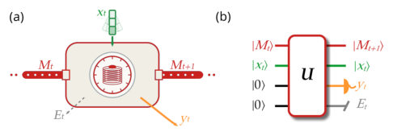
<figcaption class="paper-figure-caption"><b>Fig 1.</b> FIG. 1. Adaptive agent primitive. (a) At each timestep t an adaptive agent receives an input stimulus xt, emits an output action yt, and updates its memory state from Mt to Mt+1. Inaccessible degrees of freedom are discarded into the environment, Et. (b) Unitary circuit implementation of a single timestep for a quantum adaptive agent.</figcaption>
</figure>
<figure class="paper-figure-card">
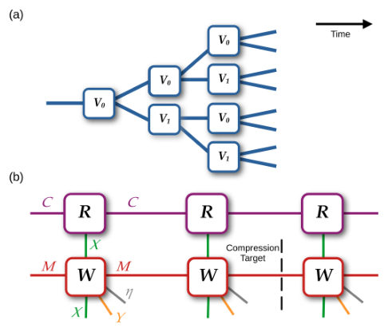
<figcaption class="paper-figure-caption"><b>Fig 2.</b> FIG. 2. Branching tree to routed MPS representation. (a) Treating the stimulus as a branch label produces |X|L</figcaption>
</figure>
<figure class="paper-figure-card">
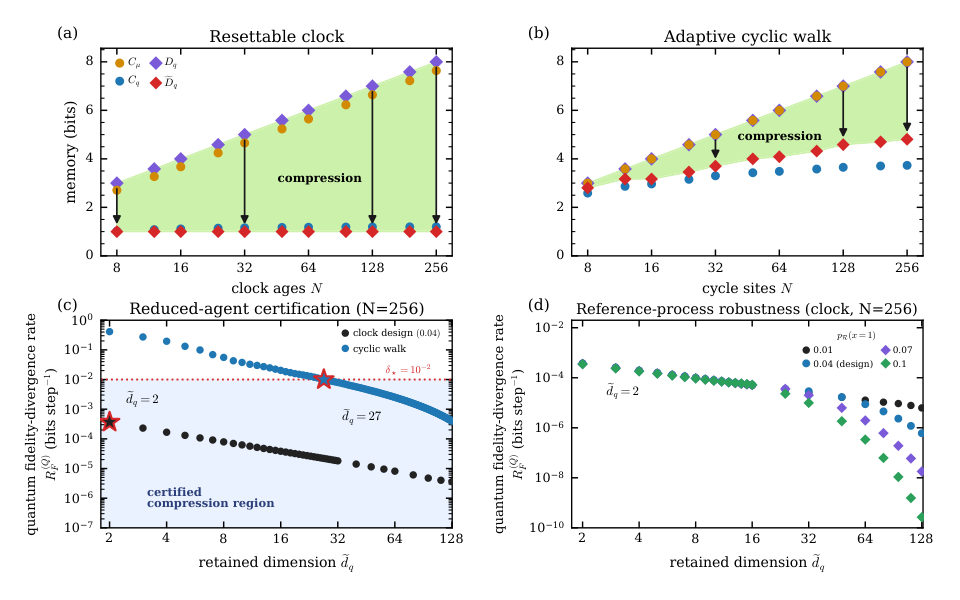
<figcaption class="paper-figure-caption"><b>Fig 3.</b> FIG. 3. Benchmarking quantum adaptive agent compression. (a,b) Memory resources for the benchmark processes: Entropic memory costs (classical Cµ, quantum Cq) of agents, and log memory dimension of the quantum agents (uncompressed Dq = log2 N, compressed ˜Dq = log2 ˜dq). Compressions taken at smallest model reaching target fidelity R(Q) F = δ⋆= 10−2 bits per timestep. (c) Compressed quantum agent fidelity divergence rates with varying compression dimension ˜dq, under driving from the reference input process. (d) Compressed quantum agent fidelity divergence rates when implementing the resettable renewal clock, under differing input processes from the reference process.</figcaption>
</figure>
<figure class="paper-figure-card">
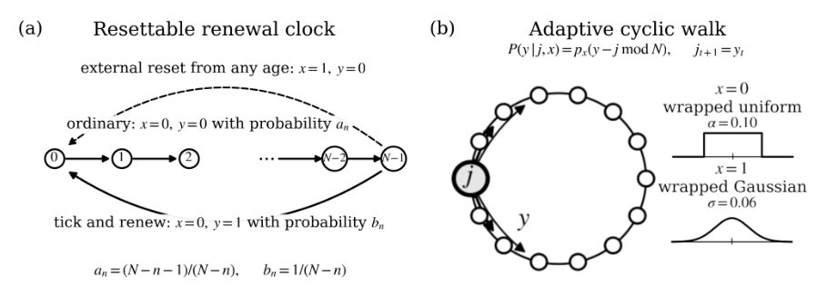
<figcaption class="paper-figure-caption"><b>Fig 4.</b> FIG. 4. Transition structures of benchmark processes. (a) Under ordinary evolution (x = 0), a clock of age n either ‘survives’ (emits y = 0) and advances to n + 1, or ticks (y = 1) and renews to age zero. The external stimulus x = 1 invokes a reset to age zero from any age, without a tick (y = 0). (b) In the cyclic walk process, a ‘walker’ occupies a discrete position j on a ring. The stimulus selects a translationally-invariant shift drawn from distribution px(r) and announces its new position y = j + rmodN: The shift distribution is a uniform top hat for input x = 0, and a Gaussian for x = 1.</figcaption>
</figure>
</div>

<p><strong>Summary.</strong> The paper introduces a 'route-truncate-repair' procedure to compress the memory requirements of quantum adaptive agents. By mapping these agents onto Matrix Product States (MPS) and systematically truncating the bond dimension, it achieves significant reduction in physical memory size. This compression is rigorously certified by a fidelity-divergence rate, establishing a practical link between theoretical entropic advantages and engineering feasibility.</p>
<p><strong>Why it may be interesting.</strong> This work provides a rigorous, mathematically grounded method for compressing complex quantum dynamics derived from memory effects, which is highly relevant for simulating large-scale open quantum systems or modeling information processing in quantum devices.</p>
<details>
<summary>Detailed structure</summary>
<p><strong>Main problem.</strong> The core problem is converting the theoretical advantage of quantum memory (entropic efficiency) into a practical, physically realizable reduction in the physical dimension required for an adaptive quantum agent.</p>
<p><strong>Main result.</strong> A novel 'route-truncate-repair' procedure successfully maps complex quantum agents to compressed Matrix Product States while providing quantifiable fidelity guarantees that preserve underlying behavior.</p>
<p><strong>Method.</strong> The method involves routing the agent dynamics through a reference input process to obtain an MPS representation, followed by local truncation of the memory bond and subsequent repair of the Kraus operators to ensure physical validity.</p>
<p><strong>Model / system.</strong> The system models quantum adaptive agents performing sequential input-output processes. The dynamics are analyzed using tensor network representations (MPS) derived from the agent's internal memory state conditioned on external stimuli.</p>
<p><strong>Key observables.</strong> Fidelity-divergence certificate ($R(Q)_F$), canonical bond state eigenvalues, and the reduced memory dimension ($   ilde{d}_q$).</p>
<p><strong>Important parameters / regimes.</strong> The reference input process $R$, which dictates the behavior prioritized during compression; the target fidelity threshold $\delta_\star$.</p>
<p><strong>Assumptions / limitations.</strong> The processes are assumed stationary (time-invariant), and the procedure relies on local repair steps to maintain trace preservation after dimension reduction.</p>
<p><strong>Figures summary.</strong> Figures illustrate the transition from complex history structures to a routed MPS, benchmark compression results comparing memory costs ($C_\mu$ vs $C_q$), and plots showing fidelity divergence rates versus retained dimensions for specific benchmarks like cyclic walks.</p>
<p><strong>Paper structure.</strong> The paper develops the theory by first establishing the MPS representation (Theorem 1), then detailing the necessary repair procedure to ensure physical validity (Theorem 2), and finally applying this framework to benchmark processes to quantify dimension reduction while bounding fidelity loss.</p>
</details>
<details>
<summary>Abstract</summary>
<p>Adaptive agents realise complex reactive behaviours by using a memory of past input stimuli and output actions to guide structured future responses. Quantum adaptive agents can operate while storing less information in memory than optimal classical counterparts; yet, this does not necessarily translate into a reduced dimension of the memory that must be physically realised. We introduce a route-truncate-repair procedure that converts entropic quantum memory advantages into reductions in memory dimension. Routing a reference input process through an agent yields a temporal matrix product state representation whose canonical bond is identified with the agent's memory. Truncating this bond and locally repairing the resulting dynamics produces a smaller, physically-valid agent that remains capable of responding to arbitrary input sequences. A fidelity-divergence certificate quantifies the resulting trade-off between accuracy and memory dimension. Benchmark adaptive processes exhibit substantial dimension reduction whilst preserving the underlying behaviour with high fidelity. These results establish a route from entropic memory advantages to practical, dimension-reduced adaptive quantum agents.</p>
</details>
<p><sub><a href="#top">↑ back to top</a></sub></p>

<p><a id="paper-2607.19084"></a></p>
<h3 id="quasi-stationary-and-quasi-ergodic-distributions-in-the-pelikan-random-map"><a href="http://arxiv.org/abs/2607.19084v1">Quasi-stationary and quasi-ergodic distributions in the Pelikan random map</a></h3>
<p><strong>Authors:</strong> Samuel Brevitt, Rainer Klages<br>
<strong>Type:</strong> theory · <strong>Category:</strong> statistical mechanics · <strong>PDF:</strong> <a href="https://arxiv.org/pdf/2607.19084v1">https://arxiv.org/pdf/2607.19084v1</a><br>
<strong>Analysis basis:</strong> full PDF text, analyzed in chunks
<strong>Topic relevance:</strong> 🔥 <code>non-equilibrium dynamics</code> <strong>4/5</strong> · <code>driven-dissipative phase transition</code> <strong>3/5</strong> · <code>methods for driven-dissipative</code> <strong>3/5</strong> · <code>non-equilibrium universality</code> <strong>2/5</strong> · <code>Keldysh / 2PI / non-Gaussian methods</code> <strong>1/5</strong> · <code>correlated / nonlocal dissipation</code> <strong>1/5</strong> · <code>scars &amp; prethermalization</code> <strong>1/5</strong></p>
<div class="figure-strip-hint">↔ Scroll figures horizontally</div>
<div class="paper-figures-scroll">
<figure class="paper-figure-card">
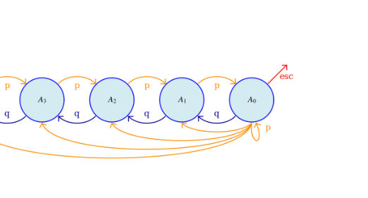
<figcaption class="paper-figure-caption"><b>Fig 1.</b> Figure 1. Left: The ‘open’ Pelikan map (12), with expanding and contracting branches shown in red and blue, respectively. The Markov partition (14) is shown in thin green dashed lines. The escape region is indicated in grey. Right: A schematic diagram of the Markov chain (9), which is the object of this paper’s study.</figcaption>
</figure>
<figure class="paper-figure-card">
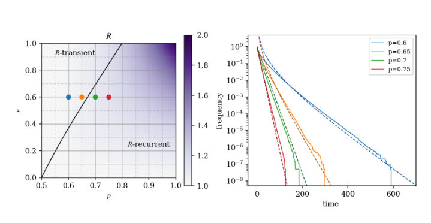
<figcaption class="paper-figure-caption"><b>Fig 2.</b> Figure 2. Left: R as a function of (p, ε) shown as a colour gradient, from either side of the dividing line (27). Right: Survival probability P[Xn ∈Ω] as a function of time n, obtained from simulations (solid lines), plotted against predictions obtained from (28) (dashed lines), for the four identified sample points shown left. Sample size N = 2 × 107. In the R-transient regime, simulations are affected by a non-exponential transient, see [13] for details.</figcaption>
</figure>
<figure class="paper-figure-card">
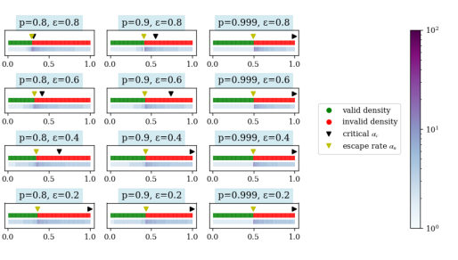
<figcaption class="paper-figure-caption"><b>Fig 3.</b> Figure 3. ‘Valid’ and ‘invalid’ values of α, for a range of p, ε. Values of α producing µk ≥0 for all k are shown in green. Invalid α, for which µk &lt; 0 for some k, are shown in red. Plot titles are coloured to indicate the dynamical regions discussed in Sec. 2.2, with R-recurrent parameters shown in blue and R-transient parameters in red. The critical value αc is shown in black, and, where it differs from this, the asymptotic αu derived from the principal escape rate is shown in gold. Below each subplot: a bar indicating the number of iterations required to determine validity/invalidity, according to the colour scale shown on the right of the figure.</figcaption>
</figure>
<figure class="paper-figure-card">
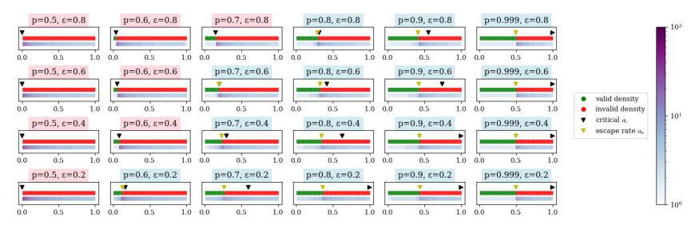
<figcaption class="paper-figure-caption"><b>Fig 4.</b> Fig. 3 confirms that, when α &gt; αc, the produced distributions are always invalid; this is because of the oscillatory problem discussed above. For α &lt; αc, we may or may not have a valid distribution; we rather observe numerically that they are valid for α ≤αu and invalid otherwise. A corollary of this is that λu is the minimal possible eigenvalue (meaning, the fastest possible escape rate), and all λ &gt; λu are supported by some α.</figcaption>
</figure>
<figure class="paper-figure-card">
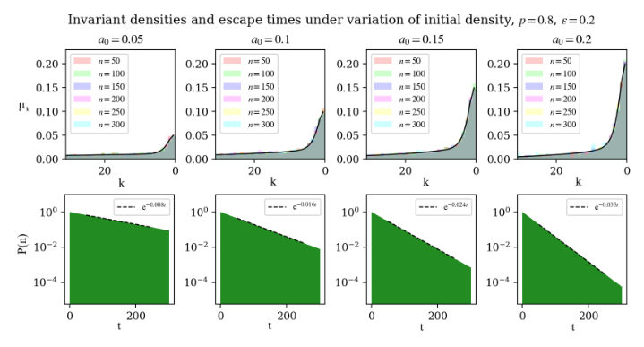
<figcaption class="paper-figure-caption"><b>Fig 5.</b> Figure 4. Top: Histograms of QSDs for a variety of α, for the sample parameters (p, ε) = (0.8, 0.2), which are preserved under the time evolution (29), normalised. The index k of each state is plotted from right to left, with the height of the bar indicating the probability mass µk. QSDs are evolved under (29) for n timesteps, for a variety of n, in varying colours, which are overlaid, thus producing grey bars where they overlap. Our theoretical QSD for each chosen value of α, produced by (43) and (44), is shown in a solid black line in each case. Bottom: In each case, the surviving population P[Xn ∈Ω] as a function of time n; the exponential escape rate (28) from our predictions is plotted...</figcaption>
</figure>
</div>

<p><strong>Summary.</strong> The paper analyzes the long-term behavior of a random process modeled after an open dynamical system. It rigorously determines the existence and structure of quasi-stationary distributions (QSDs) and quasi-ergodic distributions (QEDs). The key finding is that stable, normalizable QEDs only exist when the underlying Markov chain is in a specific R-recurrent regime.</p>
<p><strong>Why it may be interesting.</strong> This work provides rigorous mathematical tools (R-recurrence/transience analysis) to study non-equilibrium steady states (QSDs/QEDs) in open systems, which is highly relevant for modeling dissipation or particle loss in complex physical models beyond standard equilibrium statistical mechanics.</p>
<details>
<summary>Detailed structure</summary>
<p><strong>Main problem.</strong> The paper investigates quasi-stationary and quasi-ergodic distributions for a substochastic Markov chain derived from an open variant of the Pelikan random map.</p>
<p><strong>Main result.</strong> The system exhibits infinitely many QSDs for generic parameters, and a normalizable QED only exists in the R-recurrent regime; otherwise, theoretical calculations diverge or fail to match simulations.</p>
<p><strong>Method.</strong> Analysis involves solving eigenvalue problems related to the transfer operator ($M\mu^* = \lambda\mu^*$) and using generating functions (Vere-Jones formalism) to determine recurrence/transience properties.</p>
<p><strong>Model / system.</strong> The model is a biased random walk on the half-line, described by a substochastic discrete-time Markov chain with specific transition probabilities incorporating sub-stochastic resetting at state 0.</p>
<p><strong>Key observables.</strong> Quasi-stationary distributions (QSDs), Quasi-ergodic distributions (QEDs), and the associated escape rate ($\gamma_{esc} = -\ln \lambda$).</p>
<p><strong>Important parameters / regimes.</strong> The bias parameter $p$, the resetting strength $\epsilon$, and the system's dynamical regime (R-recurrent vs. R-transient).</p>
<p><strong>Assumptions / limitations.</strong> It is assumed that the principal escape rate eigenvalue ($\lambda_u$) yields the only normalizable QED, and the analysis relies on formalisms for countable absorbing Markov chains.</p>
<p><strong>Figures summary.</strong> Figure 1 illustrates the open Pelikan map and its associated Markov chain. Figure 2 maps out R-recurrence/R-transience regimes based on parameters $(p, \epsilon)$. Figure 9 compares theoretical QED calculations against numerical simulations, confirming agreement only in the R-recurrent region.</p>
<p><strong>Paper structure.</strong> The paper progresses from establishing the general framework for QSDs in open chains to analyzing recurrence properties using generating functions. It then derives explicit functional forms for the QED in different regimes, culminating in a comparison between theory and numerical simulation to delineate the boundaries of stable dynamics.</p>
</details>
<details>
<summary>Abstract</summary>
<p>In this paper we present a concrete example of a substochastic discrete-time Markov chain on a countable state space producing a spectrum of infinitely many quasi-stationary distributions (QSDs) for generic parameter values, with each QSD supporting a distinct escape rate. Our system is motivated by an open variant of the Pelikan dynamical system, a random map introduced in the 1980s. These QSDs, and their stability to perturbative random noise, are tested in numerical simulations. The existence of unique QEDs is also established for some parameter values.</p>
</details>
<p><sub><a href="#top">↑ back to top</a></sub></p>

<p><a id="paper-2607.19287"></a></p>
<h3 id="a-general-estimation-framework-for-continuous-variable-systems"><a href="http://arxiv.org/abs/2607.19287v1">A general estimation framework for continuous-variable systems</a></h3>
<p><strong>Authors:</strong> Luca Innocenti, Simone Artini, Diana A. Chisholm, Salvatore Lorenzo, Alessandro Ferraro, G. Massimo Palma, Mauro Paternostro, Gabriele Lo Monaco<br>
<strong>Type:</strong> theory · <strong>Category:</strong> other · <strong>PDF:</strong> <a href="https://arxiv.org/pdf/2607.19287v1">https://arxiv.org/pdf/2607.19287v1</a><br>
<strong>Analysis basis:</strong> full PDF text, analyzed in chunks
<strong>Topic relevance:</strong> 🔥 <code>quantum measurements</code> <strong>4/5</strong> · <code>measurement-induced transitions</code> <strong>3/5</strong> · <code>quantum optics experiment</code> <strong>2/5</strong> · <code>Keldysh / 2PI / non-Gaussian methods</code> <strong>1/5</strong> · <code>correlated / nonlocal dissipation</code> <strong>1/5</strong> · <code>driven-dissipative phase transition</code> <strong>1/5</strong> · <code>entanglement &amp; information structure</code> <strong>1/5</strong> · <code>methods for driven-dissipative</code> <strong>1/5</strong></p>
<div class="figure-strip-hint">↔ Scroll figures horizontally</div>
<div class="paper-figures-scroll">
<figure class="paper-figure-card">
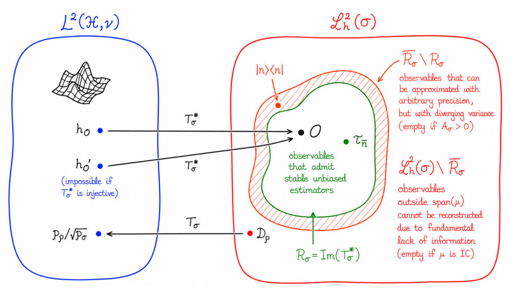
<figcaption class="paper-figure-caption"><b>Fig 1.</b> Figure 1: Schematic picture of the σ-regularized reconstruction problem. The POVM defines an analysis operator Tσ : L 2 h (σ) →L2(X , ν), which maps an operator X to its measurement coefficients, and a synthesis operator T∗ σ : L2(X , ν) → L 2 h (σ), which maps a square-integrable coefficient function h to the regularized observable T∗ σh. The range Rσ ≡Ran(T∗ σ) consists of σ-admissible observables: for every O ∈Rσ there exists h ∈L2(X , ν) such that T∗ σh = O, and the corresponding estimator ˆo = h/√pσ has finite second moment with respect to the reference distribution. Observables in Rσ \ Rσ are only weakly reconstructible: they can be approximated by admissible observables with...</figcaption>
</figure>
<figure class="paper-figure-card">
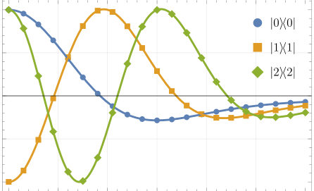
<figcaption class="paper-figure-caption"><b>Fig 2.</b> Figure 2: Estimators ˆo|n⟩⟨n|(x) for n = 0, 1, 2 as a function of x ≥0, as given by eq. (378). All three estimators are even functions of x and are independent of θ.</figcaption>
</figure>
</div>

<p><strong>Summary.</strong> This work develops a general estimation theory for continuous-variable quantum systems to determine stable state reconstruction from limited measurements. It proves that informational completeness is insufficient, establishing the 'measurement frame' condition as necessary and sufficient for stable reconstruction. The framework unifies tomography methods by using sigma-regularization to handle infinite-dimensional measurement data.</p>
<p><strong>Why it may be interesting.</strong> It provides a rigorous mathematical framework unifying continuous-variable tomography, quasiprobability representations, and estimation theory by addressing fundamental limitations of standard quantum information tools in infinite dimensions.</p>
<details>
<summary>Detailed structure</summary>
<p><strong>Main problem.</strong> To develop a general estimation theory for continuous-variable quantum systems that determines when and how quantum state properties can be stably reconstructed from finite measurement data.</p>
<p><strong>Main result.</strong> Stable reconstructibility requires the POVM effects to form a 'measurement frame,' which is a stricter condition than mere informational completeness in infinite dimensions.</p>
<p><strong>Method.</strong> The theory utilizes measurement frames within a sigma-regularized operator geometry, incorporating prior information via a reference state $\sigma$.</p>
<p><strong>Model / system.</strong> Continuous-variable quantum systems are analyzed using Positive Operator Valued Measures (POVMs), generalizing concepts from finite dimensions to continuous outcomes like those from homodyne detection.</p>
<p><strong>Key observables.</strong> Quantum states ($
ho$), expectation values of observables ($O$), and quasiprobability distributions (e.g., Glauber-Sudarshan P representation).</p>
<p><strong>Important parameters / regimes.</strong> The reference state $\sigma$, the range of the POVM synthesis operator, and the lower frame bound.</p>
<p><strong>Assumptions / limitations.</strong> Standard finite-dimensional frame theory breaks down in infinite dimensions; the framework must account for observables whose reconstruction map is unbounded.</p>
<p><strong>Figures summary.</strong> Figure 1 illustrates the sigma-regularized reconstruction problem, showing how the POVM defines an analysis operator $T_\sigma$ and a synthesis operator $T^*_\sigma$, with the range $R_\sigma$ defining $\sigma$-admissible observables.</p>
<p><strong>Paper structure.</strong> The paper establishes that informational completeness is necessary but insufficient for stable reconstruction. It then develops the measurement frame condition, characterizing reconstructibility via the analysis/synthesis operators in a sigma-regularized geometry, leading to practical estimator construction methods.</p>
</details>
<details>
<summary>Abstract</summary>
<p>We show that informational completeness, while sufficient to have a bijection between ideal measurement probabilities and quantum states, does not guarantee statistically stable reconstruction from finite measurement data. To address this problem, we develop a general estimation theory for continuous-variable systems in which stable reconstructibility is characterized by the POVM effects forming a measurement frame. Informational completeness is therefore necessary, but not sufficient, for stable reconstruction. Our framework is based on measurement frames in a $σ$-regularized operator geometry, where the reference state $σ$ encodes prior information about relevant features of the measured states. For any fixed measurement scheme, observables may be inaccessible, weakly reconstructible only through estimators with divergent variance, or stably reconstructible by finite-variance unbiased estimators. The relevant regime is determined by the range of the POVM synthesis operator. Our framework provides practical methods for constructing estimators and gives an operational interpretation of singular quasiprobability distributions, including the Glauber-Sudarshan $P$ representation: quasiprobabilities act as unbiased estimators for associated observables, and their singularities reflect a pathological feature of the corresponding measurement: its lack of loewr frame bound. We furthermore show how this formalism naturally provides operational regularization procedures tied to prior information. Overall, our framework provides a unified view of continuous-variable tomography, quasiprobability representations, and classical-shadow estimation.</p>
</details>
<p><sub><a href="#top">↑ back to top</a></sub></p>

<p><a id="paper-2607.18732"></a></p>
<h3 id="trade-off-between-predictability-and-quantum-coherence-for-multi-path-interferometry-and-its-operational-interpretation"><a href="http://arxiv.org/abs/2607.18732v1">Trade-off between predictability and quantum coherence for multi-path interferometry and its operational interpretation</a></h3>
<p><strong>Authors:</strong> Ezra Acalapati<br>
<strong>Type:</strong> theory · <strong>Category:</strong> quantum information and computing · <strong>PDF:</strong> <a href="https://arxiv.org/pdf/2607.18732v1">https://arxiv.org/pdf/2607.18732v1</a><br>
<strong>Analysis basis:</strong> full PDF text, analyzed in chunks
<strong>Topic relevance:</strong> 🔥 <code>quantum measurements</code> <strong>4/5</strong> · <code>interference shaping light</code> <strong>3/5</strong> · <code>measurement-induced transitions</code> <strong>3/5</strong> · <code>entanglement &amp; information structure</code> <strong>2/5</strong> · <code>correlated / nonlocal dissipation</code> <strong>1/5</strong> · <code>driven-dissipative phase transition</code> <strong>1/5</strong></p>
<div class="figure-strip-hint">↔ Scroll figures horizontally</div>
<div class="paper-figures-scroll">
<figure class="paper-figure-card">
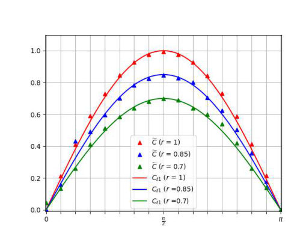
<figcaption class="paper-figure-caption"><b>Fig 1.</b> FIG. 1: Plots of the normalised coherence eC and ℓ1- coherence Cℓ1 of a single qubit as a function of θ for radii of the density matrices r = 1, 0.85, 0.7. The coherence plot is obtained by solving the associated convex opti- misation problem using scipy.optimize.minimize() in Python.</figcaption>
</figure>
<figure class="paper-figure-card">
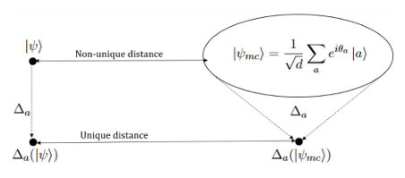
<figcaption class="paper-figure-caption"><b>Fig 2.</b> FIG. 2: This figure shows the geometric interpretation of defining the coherence monotone as a distance between the dephased target state ∆a(|ψ⟩) and the dephased max- imally coherent state ∆a(|ψmc⟩). The measure between the target state |ψ⟩and the set of maximally coherent states is not unique since there are infinitely many states within the set (as seen from the parameters θa). However, the measure between the dephasing channels of both ref- erences is unique.</figcaption>
</figure>
<figure class="paper-figure-card">
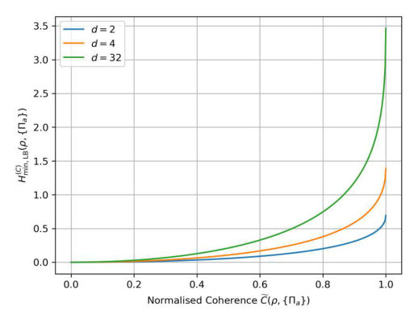
<figcaption class="paper-figure-caption"><b>Fig 3.</b> FIG. 3: The lower bound of the min-entropy H(C) min,LB versus the normalised coherence eC, which shows that the function is monotonically increasing with respect to co- herence C as in the inequality (14) and dimension d.</figcaption>
</figure>
</div>

<p><strong>Summary.</strong> This paper establishes a quantitative complementarity relation between predictability and quantum coherence in multi-path interferometry. It defines these quantities using advanced metrics like the Bures distance and proves that this duality has an operational meaning: coherence quantifies the portion of measurement uncertainty irreducible by any classical side information. This provides a tight bound relevant for quantum random number generation.</p>
<p><strong>Why it may be interesting.</strong> This work provides a fundamental resource theory perspective on wave-particle duality, linking geometric measures (Bures distance) directly to information-theoretic concepts like classical randomness and quantum source security.</p>
<details>
<summary>Detailed structure</summary>
<p><strong>Main problem.</strong> The work investigates a complementarity relation between predictability (particle-like behavior) and quantum coherence (wave-like behavior) in multi-path interferometry.</p>
<p><strong>Main result.</strong> A trade-off relation, $eC + eP \le 1$, is established for mixed states, which endows the coherence measure with an operational interpretation as the classically irreducible part of measurement randomness.</p>
<p><strong>Method.</strong> The analysis defines predictability using the Bures distance on dephased states and derives a complementary bound involving this metric and a convex-roof construction applied to coherence measures.</p>
<p><strong>Model / system.</strong> The theoretical framework is built around multi-path interferometry setups, analyzing quantum states ($
ho$) undergoing measurement in a specified basis $\{\Pi_a\}$.</p>
<p><strong>Key observables.</strong> Predictability ($P$), Quantum Coherence ($C$), Bures distance ($D_B$), and the classical-label conditional min-entropy.</p>
<p><strong>Important parameters / regimes.</strong> The dimensionality of the system ($d$) and the specific measurement basis $\{\Pi_a\}$ are key parameters.</p>
<p><strong>Assumptions / limitations.</strong> The analysis relies on defining coherence as a monotone satisfying properties like convexity, faithfulness, and monotonicity under decoherence.</p>
<p><strong>Figures summary.</strong> Figures illustrate plots showing normalized coherence ($\epsilon_C$) versus polar angle for qubits, and geometric interpretations relating coherence to the Bures distance between dephased states.</p>
<p><strong>Paper structure.</strong> The paper builds from defining predictability via Bures distance in multi-path setups, deriving a complementarity relation for pure states as an equality, extending this to mixed states using convex roofs, proving mathematical properties of the coherence measure, and finally establishing operational bounds related to quantum randomness.</p>
</details>
<details>
<summary>Abstract</summary>
<p>The complementarity principle is a cornerstone of quantum mechanics. In this work, we investigate a complementarity relation between the predictability and quantum coherence, respectively, representing the particle-like and wave-like behaviour in wave--particle duality, in a multi-path setup. We introduce a basis-dependent predictability defined by the Bures distance between the state dephased in the chosen basis and the maximally mixed state. The predictability depends only on the observed basis statistics and admits a closed form in terms of the Bhattacharyya overlap. We derive a trade-off relation between the predictability and a coherence measure defined based on the nonclassicality of the Kirkwood--Dirac quasiprobability. For pure states, the trade-off relation is an exact equality. Remarkably, this wave--particle duality relation endows the coherence measure with an operational interpretation as the classically irreducible part of measurement randomness, yielding a tight worst-case bound on the guessing probability in source-independent QRNG.</p>
</details>
<p><sub><a href="#top">↑ back to top</a></sub></p>

<p><a id="paper-2607.19255"></a></p>
<h3 id="entropy-power-functional-theory-for-brownian-many-body-dynamics"><a href="http://arxiv.org/abs/2607.19255v1">Entropy power functional theory for Brownian many-body dynamics</a></h3>
<p><strong>Authors:</strong> Matthias Schmidt<br>
<strong>Type:</strong> theory · <strong>Category:</strong> statistical mechanics · <strong>PDF:</strong> <a href="https://arxiv.org/pdf/2607.19255v1">https://arxiv.org/pdf/2607.19255v1</a><br>
<strong>Analysis basis:</strong> full PDF text, analyzed in chunks
<strong>Topic relevance:</strong> 🔥 <code>non-equilibrium dynamics</code> <strong>4/5</strong> · <code>methods for driven-dissipative</code> <strong>3/5</strong> · <code>non-equilibrium universality</code> <strong>3/5</strong> · <code>Keldysh / 2PI / non-Gaussian methods</code> <strong>1/5</strong> · <code>correlated / nonlocal dissipation</code> <strong>1/5</strong> · <code>driven-dissipative phase transition</code> <strong>1/5</strong></p>
<div class="figure-strip-hint">↔ Scroll figures horizontally</div>
<div class="paper-figures-scroll">
<figure class="paper-figure-card">
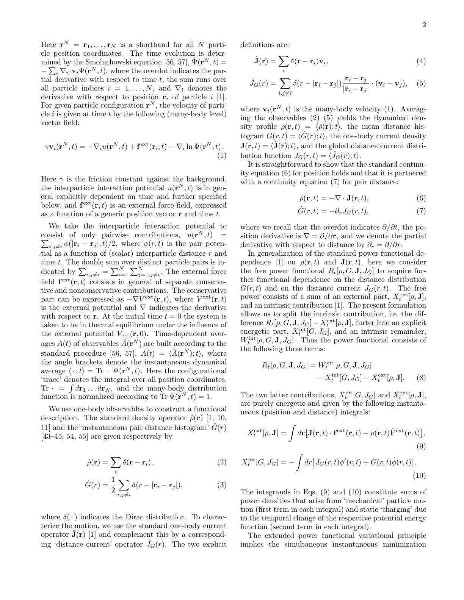
<figcaption class="paper-figure-caption"><b>Fig 1.</b> Low-resolution page preview, page 2</figcaption>
</figure>
<figure class="paper-figure-card">
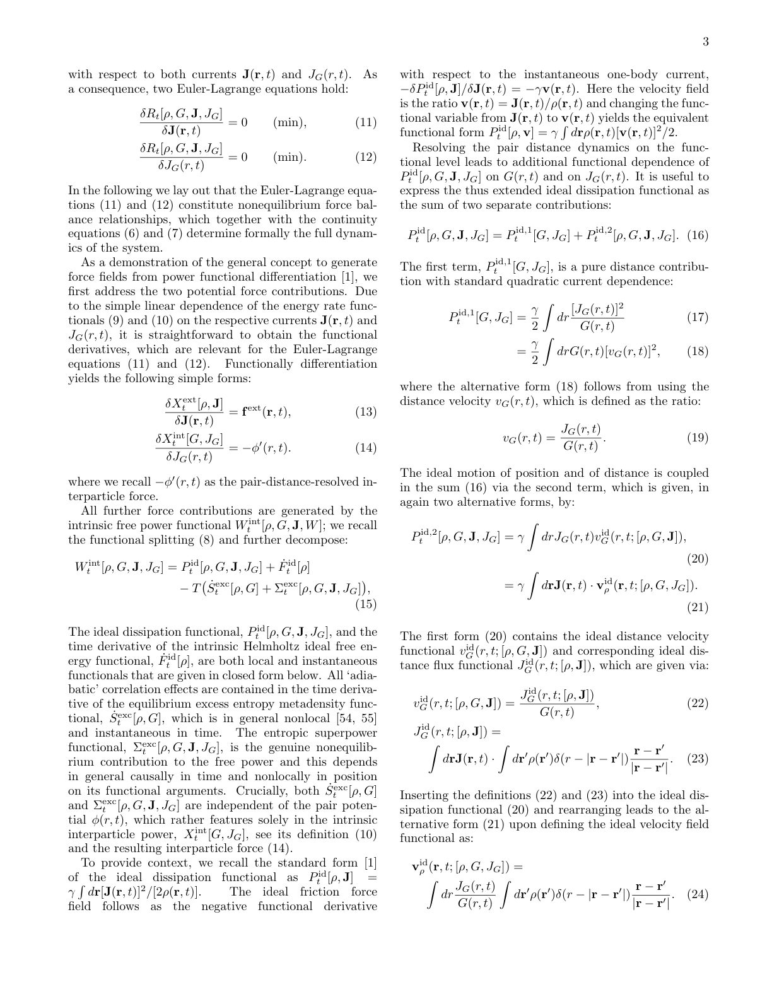
<figcaption class="paper-figure-caption"><b>Fig 2.</b> Low-resolution page preview, page 3</figcaption>
</figure>
<figure class="paper-figure-card">
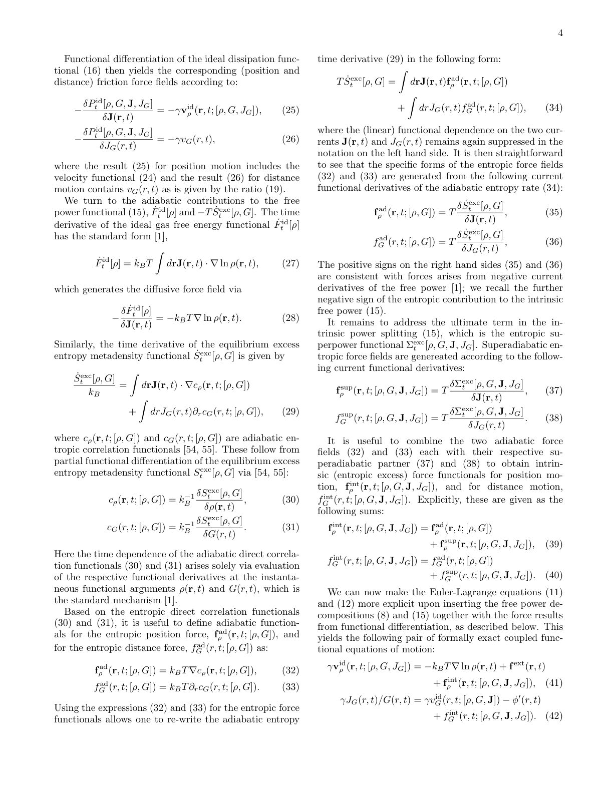
<figcaption class="paper-figure-caption"><b>Fig 3.</b> Low-resolution page preview, page 4</figcaption>
</figure>
<figure class="paper-figure-card">
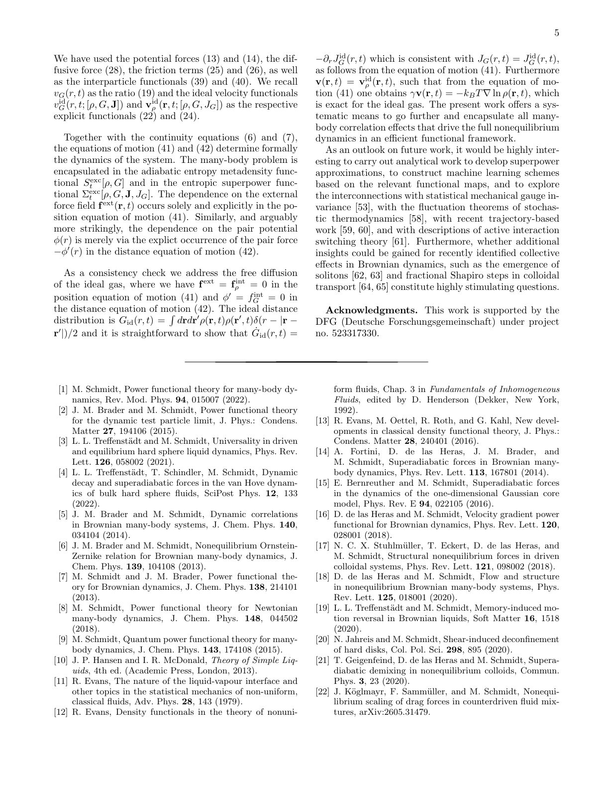
<figcaption class="paper-figure-caption"><b>Fig 4.</b> Low-resolution page preview, page 5</figcaption>
</figure>
<figure class="paper-figure-card">
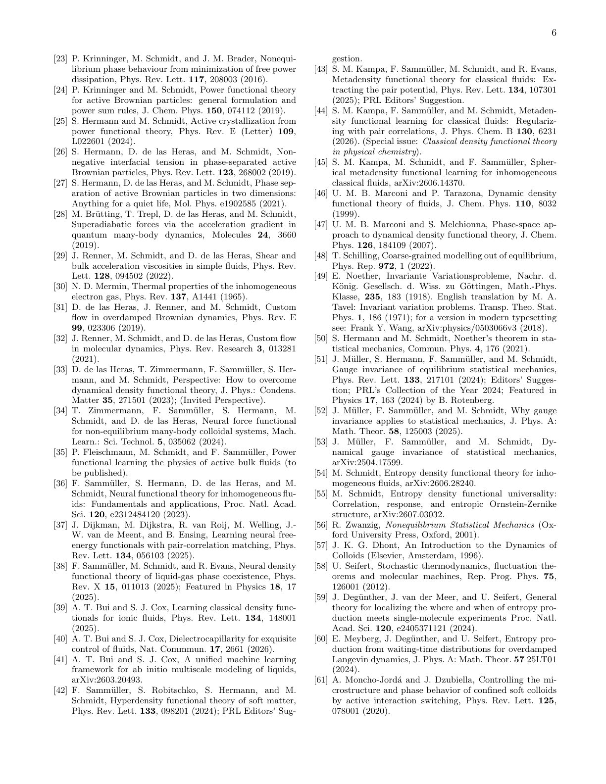
<figcaption class="paper-figure-caption"><b>Fig 5.</b> Low-resolution page preview, page 6</figcaption>
</figure>
</div>

<p><strong>Summary.</strong> This paper introduces an exact variational theory to describe the non-equilibrium dynamics of interacting many-body systems undergoing Brownian motion. It minimizes a generalized free power functional, which systematically decomposes into entropic and energetic contributions. The resulting coupled equations provide a complete description of how density and pair correlations evolve away from equilibrium.</p>
<p><strong>Why it may be interesting.</strong> This work provides a rigorous, generalized framework for non-equilibrium statistical mechanics in complex fluids, extending standard DFT/power methods by incorporating explicit entropy superpower terms relevant for far-from-equilibrium dynamics.</p>
<details>
<summary>Detailed structure</summary>
<p><strong>Main problem.</strong> Developing a formally exact variational scheme for the overdamped Brownian dynamics of pairwise interacting many-body systems in general spatiotemporal nonequilibrium.</p>
<p><strong>Main result.</strong> The full dynamics are determined by two coupled, formally exact functional equations derived from minimizing an extended joint free power functional with respect to one-body and pair current distributions.</p>
<p><strong>Method.</strong> The theory uses an extended joint free power minimization principle, splitting the free power functional into entropic and energetic rates, and employing functional differentiation to derive force balance relationships.</p>
<p><strong>Model / system.</strong> The system is a many-body ensemble undergoing overdamped Brownian dynamics with pairwise interactions, governed by the Smoluchowski equation. Key variables include one-body density ($
ho$), pair distance histogram ($G$), and their corresponding currents ($J$, $JG$).</p>
<p><strong>Key observables.</strong> One-body current density ($J(\mathbf{r}, t)$), global distance current distribution function ($JG(r, t)$), and the universal entropy superpower functional ($\Sigma_{	ext{exc}}$).</p>
<p><strong>Important parameters / regimes.</strong> Temperature (implied via $k_B T$), interaction potential $\phi(r)$, and the system's non-equilibrium state.</p>
<p><strong>Assumptions / limitations.</strong> The method is presented as a formally exact variational scheme, though future work suggests approximations like 'superpower approximations'.</p>
<p><strong>Paper structure.</strong> The paper introduces the problem by defining the dynamics via the Smoluchowski equation and then develops the theory using the joint free power minimization principle. It systematically derives force fields from functional derivatives, leading to two coupled equations of motion that close the dynamical description.</p>
</details>
<details>
<summary>Abstract</summary>
<p>We present a formally exact variational scheme for the overdamped Brownian dynamics of pairwise interacting many-body systems in general spatiotemporal nonequilibrium. A joint free power minimization principle determines instantaneously the one-body current and the global interparticle distance flux. The intrinsic free power functional splits into entropic and energetic rates, where the latter are treated explicitly. The adiabatic contribution to the entropy rate is the time derivative of the equilibrium entropy metadensity functional. Genuine nonequilibrium effects originate from a universal entropy superpower functional. Two continuity equations close the dynamical description.</p>
</details>
<p><sub><a href="#top">↑ back to top</a></sub></p>

<p><a id="paper-2607.18464"></a></p>
<h3 id="deep-inelastic-scattering-as-a-probe-of-entanglement-the-complete-qcd-dipole-cascade"><a href="http://arxiv.org/abs/2607.18464v1">Deep inelastic scattering as a probe of entanglement: the complete QCD dipole cascade</a></h3>
<p><strong>Authors:</strong> Martin Hentschinski, Krzysztof Kutak, Wieslaw Placzek, Martin Rohrmoser<br>
<strong>Type:</strong> theory · <strong>Category:</strong> other · <strong>PDF:</strong> <a href="https://arxiv.org/pdf/2607.18464v1">https://arxiv.org/pdf/2607.18464v1</a><br>
<strong>Analysis basis:</strong> full PDF text, analyzed in chunks
<strong>Topic relevance:</strong> 🔥 <code>entanglement &amp; information structure</code> <strong>4/5</strong> · <code>Keldysh / 2PI / non-Gaussian methods</code> <strong>2/5</strong> · <code>non-equilibrium dynamics</code> <strong>2/5</strong> · <code>correlated / nonlocal dissipation</code> <strong>1/5</strong> · <code>driven-dissipative phase transition</code> <strong>1/5</strong> · <code>methods for driven-dissipative</code> <strong>1/5</strong> · <code>non-equilibrium universality</code> <strong>1/5</strong></p>
<div class="figure-strip-hint">↔ Scroll figures horizontally</div>
<div class="paper-figures-scroll">
<figure class="paper-figure-card">
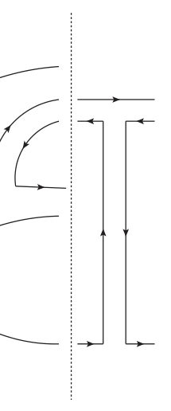
<figcaption class="paper-figure-caption"><b>Fig 1.</b> Figure 1: Schematic scattering of two color dipoles, e.g. a virtual photon and a heavy onium state; the dashed line indicates the transition from the initial-state wave function towards the color-entangled state. Each of the scattering particles maintains its transverse position during the scattering, while its color charge is being modified. Coherence of the initial wave functions is being lost.</figcaption>
</figure>
<figure class="paper-figure-card">
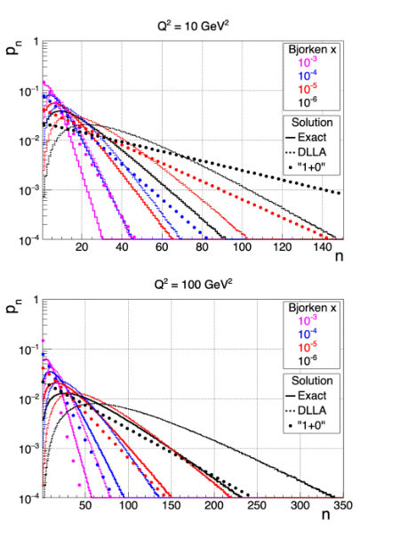
<figcaption class="paper-figure-caption"><b>Fig 2.</b> Figure 2: Monte Carlo results from DIPMAR for probability distributions pn of a number of generated dipoles n corresponding to the fixed ¯αs = 0.1 and the initial dipole size (for ‘Exact’ and ‘DLLA’) r = 0.85 fm. In the ‘Exact’ case, the IR cut-off ∆IR = r = 0.85 fm was also applied.</figcaption>
</figure>
<figure class="paper-figure-card">
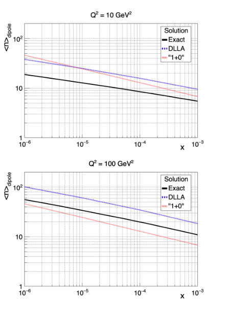
<figcaption class="paper-figure-caption"><b>Fig 3.</b> Figure 3: Monte Carlo results from DIPMAR for the dipole mean multiplicity ⟨n⟩dipole corresponding to the fixed ¯αs = 0.1 and the initial dipole size (for ‘Exact’ and ‘DLLA’) r = 0.85 fm. In the ‘Exact’ case, the IR cut-off ∆IR = r = 0.85 fm was also applied.</figcaption>
</figure>
<figure class="paper-figure-card">
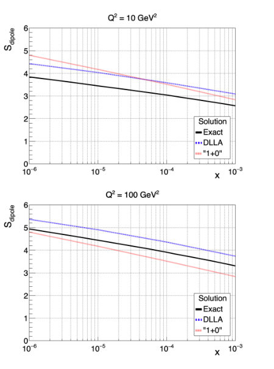
<figcaption class="paper-figure-caption"><b>Fig 4.</b> Figure 4: Monte Carlo results from DIPMAR for the dipole entropy Sdipole corresponding to the fixed ¯αs = 0.1 and the initial dipole size (for ‘Exact’ and ‘DLLA’) r = 0.85 fm. In the ‘Exact’ case, the IR cut-off ∆IR = r = 0.85 fm was also applied.</figcaption>
</figure>
<figure class="paper-figure-card">
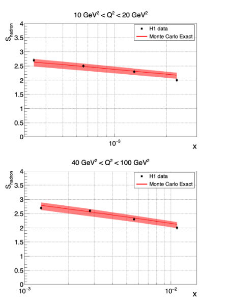
<figcaption class="paper-figure-caption"><b>Fig 5.</b> Figure 5: Comparison of Monte Carlo results from DIPMAR with the H1 data for the hadron entropy Shadron. The numerical results have been obtained through the MCMC solution of the exact dipole evolution equation with the fixed ¯αs = 0.1 and the initial dipole size r = 1.0 fm (with ∆IR = r). The uncertainty bands correspond to the Q2 ranges of the H1 measurements.</figcaption>
</figure>
</div>

<p><strong>Summary.</strong> This paper applies concepts from quantum information theory to Deep Inelastic Scattering (DIS) within the framework of high-energy QCD dipoles. It calculates the entanglement entropy by analyzing how tracing over unobserved color degrees of freedom affects the system's density matrix. The results provide a theoretical prediction for entanglement in hadronic structure, comparing it against experimental measurements.</p>
<p><strong>Why it may be interesting.</strong> While focused on QCD, the core mathematical machinery—calculating entanglement entropy from reduced density matrices derived from complex field theory dynamics—is highly relevant to open quantum systems and many-body physics simulations.</p>
<details>
<summary>Detailed structure</summary>
<p><strong>Main problem.</strong> The study investigates how entanglement entropy can be calculated in Deep Inelastic Scattering (DIS) by treating the process using the dipole formulation of high-energy Quantum Chromodynamics (QCD). The goal is to quantify information loss due to tracing over unobserved color degrees of freedom.</p>
<p><strong>Main result.</strong> The authors derive entanglement entropy directly from von Neumann entropy using dipole multiplicities, finding that the Double Leading Logarithmic Approximation (DLLA) yields a larger entropy compared to other methods for the same initial conditions. These results are compared against empirical measurements from the H1 collaboration.</p>
<p><strong>Method.</strong> The methodology involves deriving the reduced density matrix by tracing over unobserved color degrees of freedom and solving low-$x$ evolution equations governing dipole multiplicities, considering both transverse-size and azimuthal-angle dependence.</p>
<p><strong>Model / system.</strong> The physical system is DIS ($   ext{electron} +     ext{proton}$), modeled using the QCD dipole formulation in the high-energy limit. The theoretical framework relies on solving generalized BFKL-type evolution equations for color dipoles, leading to a description of the proton as an entangled quantum state.</p>
<p><strong>Key observables.</strong> Entanglement entropy ($S$), dipole multiplicities ($\langle n 
angle$), and comparison with Shannon entropy measured by the H1 collaboration.</p>
<p><strong>Important parameters / regimes.</strong> Low Bjorken $x$, transverse size, azimuthal angle dependence, and the evolution scale $Q^2$.</p>
<p><strong>Assumptions / limitations.</strong> The derivation assumes that a reduced density matrix accurately describes the system after tracing over unobserved degrees of freedom. Approximations include using DLLA and assuming high-energy factorization.</p>
<p><strong>Figures summary.</strong> Figure 1 schematically illustrates the scattering process involving two color dipoles, demonstrating coherence loss as the color charge is modified during the interaction.</p>
<p><strong>Paper structure.</strong> The paper develops from establishing the formalism of entanglement entropy in DIS using the dipole basis to solving the relevant low-$x$ evolution equations (including DLLA) and finally comparing the calculated entropy with existing experimental data.</p>
</details>
<details>
<summary>Abstract</summary>
<p>We study entanglement entropy in Deep Inelastic Scattering (DIS) using the dipole formulation of the high-energy limit of QCD. We argue that a reduced density matrix arises in low $x$ DIS due to a trace over unobserved color degrees of freedom and we obtain entanglement entropy in terms of dipole multiplicities, directly from the von Neumann entropy.   %In the present study we explicitly construct a density matrix representing the entangled state of the photon and proton and perform a trace over unobserved degrees of freedom. Dipole multiplicities are obtained from a solution to low $x$ evolution equations, which we solve numerically. Unlike previous studies, we take into account both transverse-size and azimuthal-angle dependence in the dipole evolution kernel. We study both the exact solution of the equation as well as its double leading-logarithmic approximation (DLLA). We find that for the same initial dipole size, the DLLA solution generates a larger entropy. %We interpret this as information loss due to erasing data on daughter dipole sizes. Finally, we calculate the dipole multiplicities and entanglement entropy and compare our results to the Shannon entropy of hadron multiplicities, as measured by the H1 collaboration.</p>
</details>
<p><sub><a href="#top">↑ back to top</a></sub></p>

<p><a id="paper-2607.18469"></a></p>
<h3 id="quantum-enabled-spintronic-small-antennas"><a href="http://arxiv.org/abs/2607.18469v1">Quantum-Enabled Spintronic "Small" Antennas</a></h3>
<p><strong>Authors:</strong> Supriyo Bandyopadhyay<br>
<strong>Type:</strong> both · <strong>Category:</strong> other · <strong>PDF:</strong> <a href="https://arxiv.org/pdf/2607.18469v1">https://arxiv.org/pdf/2607.18469v1</a><br>
<strong>Analysis basis:</strong> full PDF text, analyzed in chunks
<strong>Topic relevance:</strong> 🔥 <code>spintronics-quantum-optics interface</code> <strong>4/5</strong> · <code>quantum optics experiment</code> <strong>2/5</strong> · <code>analog quantum simulation</code> <strong>1/5</strong> · <code>correlated / nonlocal dissipation</code> <strong>1/5</strong> · <code>driven-dissipative phase transition</code> <strong>1/5</strong> · <code>exotic spin models in light-matter</code> <strong>1/5</strong> · <code>non-equilibrium dynamics</code> <strong>1/5</strong> · <code>superradiant laser</code> <strong>1/5</strong></p>
<div class="figure-strip-hint">↔ Scroll figures horizontally</div>
<div class="paper-figures-scroll">
<figure class="paper-figure-card">
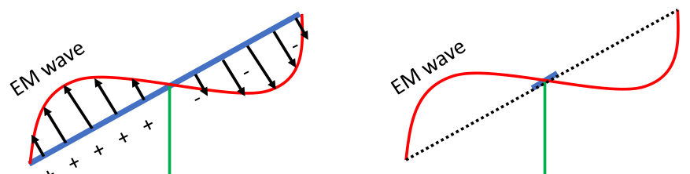
<figcaption class="paper-figure-caption"><b>Fig 1.</b> Figure 1: (a) A dipole antenna that is one wavelength long and can host a resonant electric dipole. (b) An antenna much smaller than the wavelength cannot host a dipole.</figcaption>
</figure>
<figure class="paper-figure-card">
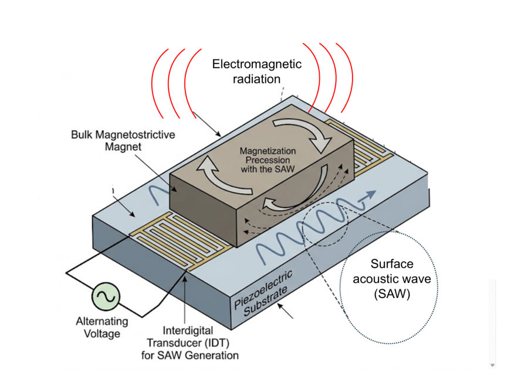
<figcaption class="paper-figure-caption"><b>Fig 2.</b> Figure 2: A bulk magnetostrictive magnet on a piezoelectic substrate or film will radiate electromagnetric waves if a surface acoustic wave (SAW) [or a bulk acoustic wave] is launched in the piezoelectric. The acoustic wave generates time varying strain in the magnet and that causes the magnetization to precess because of the inverse magnetostriction (or Villari) effect. The time-varying magnetization radiates electromagnetic waves and this is the basis of a magneto-elastic antenna.</figcaption>
</figure>
<figure class="paper-figure-card">
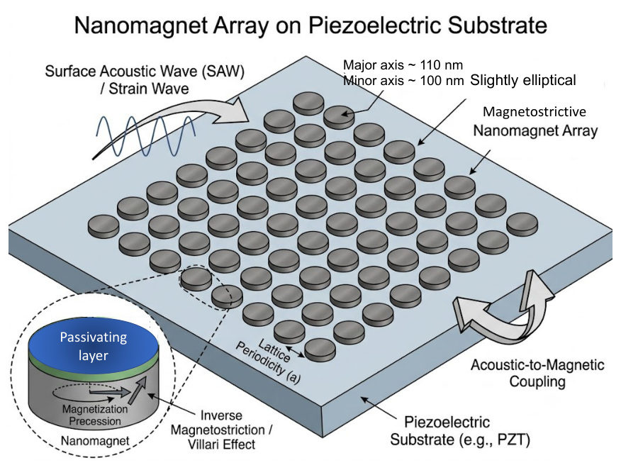
<figcaption class="paper-figure-caption"><b>Fig 3.</b> Figure 3: A two-dimensional periodic array of slightly elliptical magnetostrictive nanomagnets deposited on a piezoelectric substrate (or a piezoelectric thin film) forming an “artificial multiferroic magnonic crystal”. A surface acoustic wave launched in the piezoelectric with appropriate electrodes (not shown) will subject the nanomagnets to periodic strain and cause their magnetizations to precess owing to the inverse magne- tostriction effect. This will radiate electromagnetic waves in the surrounding space.</figcaption>
</figure>
<figure class="paper-figure-card">
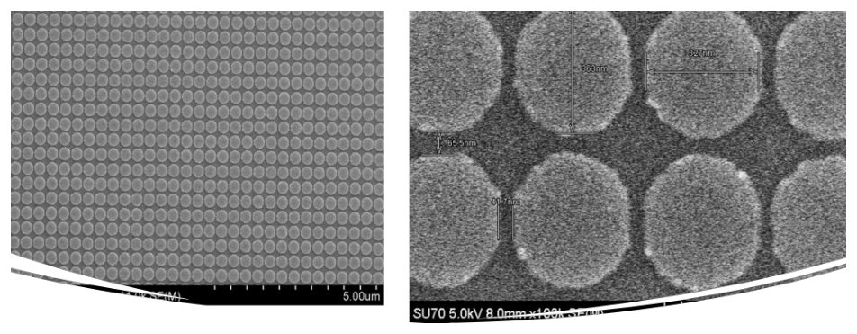
<figcaption class="paper-figure-caption"><b>Fig 4.</b> Figure 4: (a) Scanning electron micrograph of a two-dimensional periodic array of nanomagnets deposited on a piezoelectric LiNbO3 substrate in which a RF frequency SAW was launched with electrodes. (b) Higher resolution image showing the nanomagnet dimension and inter-nanomagnet spacing. The nanomagnets are elliptical with major axis dimension ∼360 nm, minor axis ∼330 nm, edge-to-edge spacing ∼65 nm along the major axis direction and ∼42 nm along the minor axis direction. The thickness of the nanomagnets was 6 nm. Reproduced from [17] with CC-BY license.</figcaption>
</figure>
<figure class="paper-figure-card">
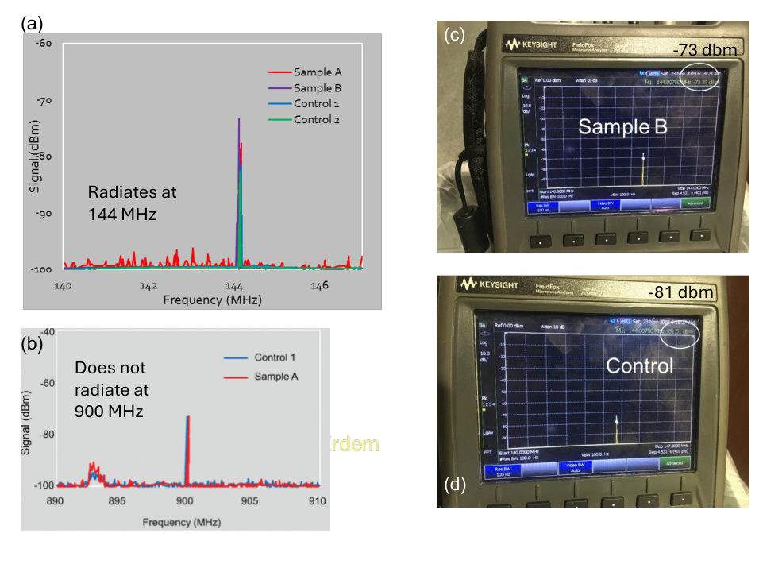
<figcaption class="paper-figure-caption"><b>Fig 5.</b> Figure 5: Electromagnetic radiation spectrum of the real and control samples at 144 MHz and 900 MHz. Two real samples A and B were measured along with their corresponding control samples that contained no nanomagnets. (a) Radiation spectra of the two samples A and B along with those of the corresponding control samples at 144 MHz input SAW frequency. (b) The radiation from a real sample and the corresponding control sample cannot be resolved at 900 MHz input SAW frequency indicating that the nanomagnets are not radiating sufficiently. (c) Direct screenshot from the spectrum analyzer for sample B at 144 MHz SAW frequency. The received power at the detector is -73 dbm. (d) Direct screenshot...</figcaption>
</figure>
</div>

<p><strong>Summary.</strong> The paper introduces quantum-enabled spintronic antennas that overcome the size limitations of traditional antennas by utilizing artificial multiferroic magnonic crystals. By coupling phonons (from acoustic waves) to magnons and subsequently to photons, these structures achieve radiation efficiencies orders of magnitude higher than classical predictions. This breakthrough enables highly miniaturized devices for applications like medical implants and covert communication.</p>
<p><strong>Why it may be interesting.</strong> This work demonstrates how engineered material couplings (phonon/magnon) can circumvent fundamental classical electromagnetic limits to achieve highly efficient energy radiation from nanoscale devices, which is a key concept in open quantum systems and quantum optics applied to solid-state physics.</p>
<details>
<summary>Detailed structure</summary>
<p><strong>Main problem.</strong> Traditional antennas fail to maintain high radiation efficiency when miniaturized below fractions of the radiated wavelength due to classical electromagnetic limitations (Harrington limit).</p>
<p><strong>Main result.</strong> The use of nanomagnets in magneto-elastic structures successfully generates strong, highly efficient electromagnetic emission from extreme sub-wavelength antennas, significantly exceeding conventional theoretical limits.</p>
<p><strong>Method.</strong> Measurements involve analyzing radiation efficiency ($\eta = 	ext{Rrad} / (	ext{Rrad} + 	ext{Rloss})$) by comparing samples with and without nanomagnets, alongside characterizing resonant coupling via $S_{11}$ spectra measurements.</p>
<p><strong>Model / system.</strong> The system is an Artificial Multiferroic Magnonic Crystal (AMMC), comprising a 2D periodic array of nanomagnets deposited on a piezoelectric substrate. Energy transfer relies on tripartite phonon-magnon-photon coupling, exciting hybrid magneto-dynamical modes.</p>
<p><strong>Key observables.</strong> Radiation efficiency ($\eta$), $S_{11}$ spectra dips indicating resonant energy transfer, and measured receiving gain ($G_r$).</p>
<p><strong>Important parameters / regimes.</strong> The Harrington limit ($\eta \propto (A/\lambda)^2$); the acoustic wavelength ($\lambda_{	ext{ac}}$) which can be much smaller than the electromagnetic wavelength ($\lambda_{	ext{EM}}$).</p>
<p><strong>Assumptions / limitations.</strong> The efficiency enhancement is attributed to utilizing acoustic resonances and non-classical coupling mechanisms, rather than classical magnetic dipole radiation.</p>
<p><strong>Figures summary.</strong> Figures illustrate theoretical limitations (dipole formation), basic magneto-elastic principles, the nanomagnet array structure, and experimental results showing signal presence only with nanomagnets at various frequencies.</p>
<p><strong>Paper structure.</strong> The paper progresses from identifying the miniaturization challenge to proposing the AMMC system, detailing the underlying physics of phonon-magnon-photon coupling, presenting measurements confirming resonant enhancement, and finally discussing advanced applications like beam steering and stealth communication.</p>
</details>
<details>
<summary>Abstract</summary>
<p>Antennas transmit information wirelessly from one location to another via electromagnetic waves. Miniaturizing them, however, is challenging since the radiation efficiencies of all traditional antennas, based on the principles of classical electromagnetics, plummet when their dimensions are shrunk to tiny fractions of the radiated wavelength. Lately, a new generation of antennas whose operations are underpinned by non-classical principles have been demonstrated and they can overcome this limitation. This enables embedded applications that were hitherto inaccessible. In addition, beam steering, which normally requires a large phased array (multiple antenna elements each much larger than the wavelength), can now be accomplished with a single element much smaller than the wavelength. Some of these antennas also have stealth attributes for secure and covert communication, which makes this new genre a disruptive new technology.</p>
</details>
<p><sub><a href="#top">↑ back to top</a></sub></p>

<p><a id="paper-2607.18387"></a></p>
<h3 id="remote-entanglement-need-not-be-the-bottleneck-for-modular-trapped-ion-quantum-computing"><a href="http://arxiv.org/abs/2607.18387v1">Remote entanglement need not be the bottleneck for modular trapped-ion quantum computing</a></h3>
<p><strong>Authors:</strong> Felix W. Knollmann, David P. Nadlinger, John Blue, Sabrina M. Corsetti, Sam J. Bishop, Adam R. Martinez, Jelena Notaros, Colin D. Bruzewicz, Robert McConnell, Isaac L. Chuang<br>
<strong>Type:</strong> both · <strong>Category:</strong> quantum information and computing · <strong>PDF:</strong> <a href="https://arxiv.org/pdf/2607.18387v1">https://arxiv.org/pdf/2607.18387v1</a><br>
<strong>Analysis basis:</strong> full PDF text, analyzed in chunks
<strong>Topic relevance:</strong> 🔥 <code>QC/QI experiment</code> <strong>4/5</strong> · <code>quantum optics experiment</code> <strong>3/5</strong> · <code>entanglement &amp; information structure</code> <strong>1/5</strong> · <code>interference shaping light</code> <strong>1/5</strong> · <code>quantum measurements</code> <strong>1/5</strong></p>
<div class="figure-strip-hint">↔ Scroll figures horizontally</div>
<div class="paper-figures-scroll">
<figure class="paper-figure-card">
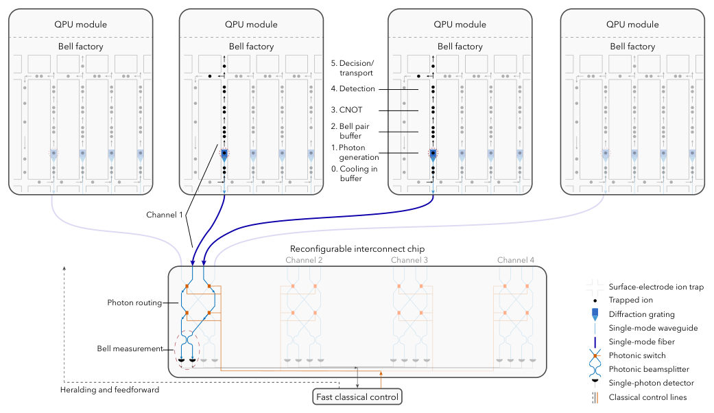
<figcaption class="paper-figure-caption"><b>Fig 1.</b> FIG. 1. Remote entanglement generation architecture. Each quantum processing unit (QPU) is a module consisting of a microfabricated surface-electrode trap with integrated optics. The Bell factory produces and distills remote Bell pairs for intermodule operations. The photonic links consist of single-mode waveguides and fibers. A switch network enables all-to-all connectivity and passive beamsplitters provide the photon interference needed for entanglement. Detectors herald entangled states and a classical processing unit coordinates the entanglement process.</figcaption>
</figure>
<figure class="paper-figure-card">
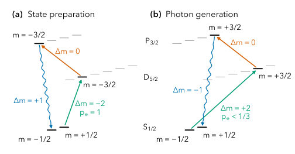
<figcaption class="paper-figure-caption"><b>Fig 2.</b> FIG. 2. Energy level diagrams of commonly used 40Ca+, 88Sr+, and 138Ba+ ions that show the two-step excitation used for (a) state preparation and (b) entanglement without requiring circularly polarized light. An electric-quadrupole transition allows a change in angular momentum of |∆m|=2, such that a π-polarized excitation to the stretched state of an excited level with a dipole-allowed decay back to the ground state leaves the ion with a net change of |∆m|=1 in the pro- jection of angular momentum.</figcaption>
</figure>
<figure class="paper-figure-card">
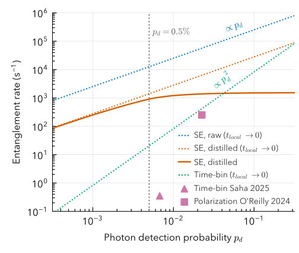
<figcaption class="paper-figure-caption"><b>Fig 3.</b> FIG. 3. Heralded entanglement rate as a function of the pho- ton detection probability pd for 88Sr+, assuming the cycle times and local-operation timings in Table III. Dotted blue: single-excitation raw heralded rate and dotted orange: dis- tilled rate assuming instantaneous local operations (both at excitation probability pe = 1/3). Solid orange: single- excitation rate under the parallelized model of Eq. 4, with the rate set by the slowest of (Bell-pair, detection, CNOT) blocks and pe optimized to maximize rate at each pd using the parameters of (Table III) but without accounting for buffer limitations. Solid green: time-bin (two-photon coincidence) rate at pe = 1. The marked points...</figcaption>
</figure>
<figure class="paper-figure-card">
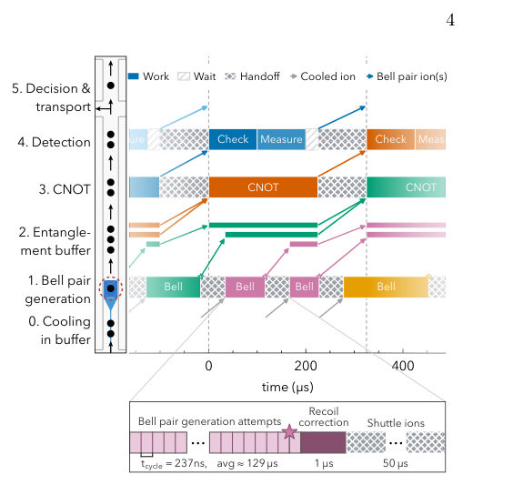
<figcaption class="paper-figure-caption"><b>Fig 4.</b> FIG. 4. Pipeline for entanglement generation separated into blocks that can execute in parallel. Pre-cooled ions from a buffer move into the entanglement zone. After a successful herald, the recoil is corrected and consecutive ion pairs are buffered and then combined for a local CNOT. The ion pair undergoes leakage checks in the detection zone before the tar- get ion is read out to determine the distilled state parity. A successfully distilled control ion exits the Bell factory while remaining ions are recycled to the starting buffer.</figcaption>
</figure>
<figure class="paper-figure-card">
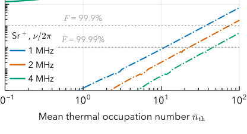
<figcaption class="paper-figure-caption"><b>Fig 5.</b> FIG. 5. The Bell-state error 1 −F for 88Sr+ as a function of the mean motional occupation number ¯nth, for three secular frequencies ν/2π ∈{1, 2, 4} MHz and assuming a collection optic NA of 0.4; solid curves are the bare result, dot-dashed curves include the post-herald application of a spin-dependent displacement to correct photon recoil [31] and successful distil- lation (spin-dependent displacement and distillation assumed to be error-free).</figcaption>
</figure>
</div>

<p><strong>Summary.</strong> This paper addresses the scalability challenge in modular trapped-ion quantum computing by tackling the rate and fidelity limitations of remote entanglement links. The authors propose a comprehensive architecture that integrates single-photon heralding with compact photonics and source-level error correction. They conclude that these advancements allow the system to overcome the entanglement bottleneck, suggesting future improvements must focus on local gate operations.</p>
<p><strong>Why it may be interesting.</strong> It provides a concrete roadmap for scaling quantum processors by addressing the critical interface problem—the reliable, high-rate connection between independently operating quantum modules using established AMO platforms like trapped ions.</p>
<details>
<summary>Detailed structure</summary>
<p><strong>Main problem.</strong> The primary challenge is overcoming the bottleneck of generating shared entanglement at a rate, density, and fidelity sufficient for fault-tolerant modular quantum computation.</p>
<p><strong>Main result.</strong> By synthesizing single-photon heralding, integrated photonics, and source-level error correction, the authors show that remote entanglement generation can reach rates compatible with local operations, shifting the computational bottleneck elsewhere.</p>
<p><strong>Method.</strong> The approach involves developing a comprehensive architecture combining advanced quantum optics techniques (single-photon heralding) with physical integration (trap-integrated photonics) and theoretical protocols (projective distillation).</p>
<p><strong>Model / system.</strong> The work focuses on modular trapped-ion Quantum Processing Units (QPUs) linked by 'Bell factories' using surface-electrode ion traps. Entanglement is generated via photonic links connecting these modules.</p>
<p><strong>Key observables.</strong> Projected remote Bell-pair rate density ($10^5 	ext{ s}^{-1}	ext{cm}^{-2}$), and achieved fidelity ($\geq 99.9\%$).</p>
<p><strong>Important parameters / regimes.</strong> Target rates for fault tolerance ($10^4 - 10^6 	ext{ s}^{-1}$ per module); the rate is shown to be limited by the slowest local operation block in a pipeline.</p>
<p><strong>Assumptions / limitations.</strong> The argument relies on successfully implementing and synthesizing several mature enabling technologies: single-photon heralding, coherent recoil correction, projective distillation, and compact integrated photonics.</p>
<p><strong>Figures summary.</strong> Figure 1 illustrates the overall remote entanglement generation architecture. Figure 3 compares heralded entanglement rates for different encoding schemes (e.g., Time-bin vs. Polarization). Figure 4 details the pipelined process flow for generating entangled pairs.</p>
<p><strong>Paper structure.</strong> The paper establishes the need for modularity, analyzes current limitations in trapped-ion links compared to local gates, and then proposes a synthesized architecture incorporating multiple advanced techniques (heralding, correction, integration) to overcome the entanglement bottleneck.</p>
</details>
<details>
<summary>Abstract</summary>
<p>Modularity underpins classical computing; as quantum processors encounter limits on fabrication yield, reliability, and size, they will need it just as acutely. The bottleneck to linking modules is producing shared entanglement at sufficient rate, density, and fidelity. Trapped ions hold the best demonstrated photonic links, yet they rely on bulky collection optics that cap how densely links can be packed, and their performance trails local gates by two orders of magnitude in rate and fidelity. We synthesize several enabling results $\unicode{x2014}$ single-photon heralding, coherent recoil correction, projective distillation, and trap-integrated photonics $\unicode{x2014}$ into one comprehensive architecture that substantially narrows this gap. Single-photon heralding leads to linear scaling of success probability with detection efficiency, allowing compact integrated photonics to saturate the entanglement rate at a local-operation limit in dense, easy-to-parallelize channels. Addressing its inherent error mechanisms at their source, we project a Bell-pair fidelity of 99.9\% at rates and densities compatible with fault-tolerant operations. Remote entanglement then need not remain the bottleneck for modular trapped-ion computing; the limit shifts to the local operations that must improve regardless.</p>
</details>
<p><sub><a href="#top">↑ back to top</a></sub></p>

<p><a id="paper-2607.19204"></a></p>
<h3 id="experimental-quantum-cryptography-with-single-photons-and-imperfect-devices"><a href="http://arxiv.org/abs/2607.19204v1">Experimental quantum cryptography with single photons and imperfect devices</a></h3>
<p><strong>Authors:</strong> Aodhán Corrigan, Koray Kaymazlar, Zhiyao Wang, Lucas Rickert, Daniel Vajner, Martin von Helversen, Hanqing Liu, Shulun Li, Haiqiao Ni, Zhichuan Niu, Devashish Tupkary, Tobias Heindel<br>
<strong>Type:</strong> both · <strong>Category:</strong> quantum information and computing · <strong>PDF:</strong> <a href="https://arxiv.org/pdf/2607.19204v1">https://arxiv.org/pdf/2607.19204v1</a><br>
<strong>Analysis basis:</strong> full PDF text, analyzed in chunks
<strong>Topic relevance:</strong> 🔥 <code>QC/QI experiment</code> <strong>4/5</strong> · <code>quantum optics experiment</code> <strong>3/5</strong> · <code>quantum measurements</code> <strong>1/5</strong></p>
<div class="figure-strip-hint">↔ Scroll figures horizontally</div>
<div class="paper-figures-scroll">
<figure class="paper-figure-card">
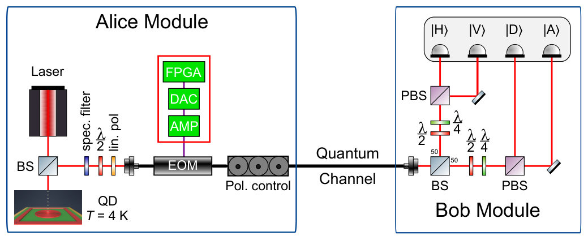
<figcaption class="paper-figure-caption"><b>Fig 1.</b> FIG. 1. Experimental setup for our BB84 implementation. Alice prepares single photons using a deterministic single photon source comprised of a single QD embedded in a photonic microcavity and dynamically selects the polarization using an EOM. These are sent to Bob’s passive four-state polarization analyzer, comprised of SNSPD based detectors.</figcaption>
</figure>
<figure class="paper-figure-card">
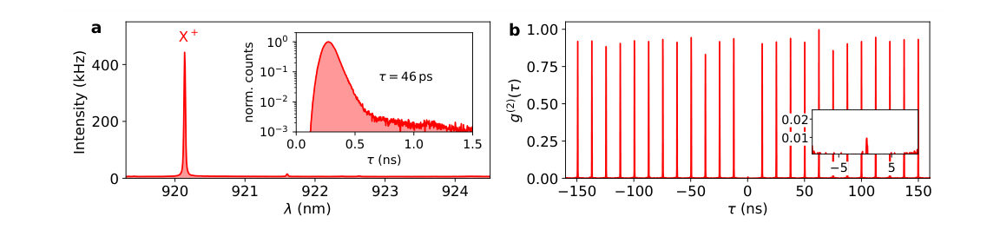
<figcaption class="paper-figure-caption"><b>Fig 2.</b> FIG. 2. a) Emission spectrum of the QD microcavity device under quasi-resonant (p-shell) excitation. The strongly Purcell- enhanced trion state (X+) at 920.1 nm exhibits a ultra-fast decay time &lt; 50 ps, as depicted in the time-resolved measurement in the inset. b) Second-order photon correlation histogram measured in Hanbury-Brown and Twiss configuration. The strong multiphoton suppression of g(2)(τ = 0) = (1.7 ± 0.5) · 10−2 demonstrates sub-Poissonian emission statistics.</figcaption>
</figure>
<figure class="paper-figure-card">
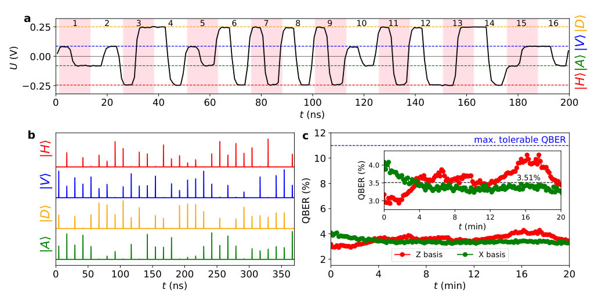
<figcaption class="paper-figure-caption"><b>Fig 3.</b> FIG. 3. (a) Example of the employed random sequence for a 200 ns long excerpt containing 16 bits of given voltage level U in the four polarization states, followed immediately by the binary switching in each bit as inspired by the Manchester encoding. (b) Sample of time-tags averaged over multiple QRNG sequence loops, showing high polarization suppression in all four bases over ∼400 ns of the QRNG sequence. (c) Maximum tolerable QBER of 11% for BB84 QKD and achieved QBER for Z and X bases over the course of the experiment (i.e. 20 mins), with a time average of 3.51%.</figcaption>
</figure>
<figure class="paper-figure-card">
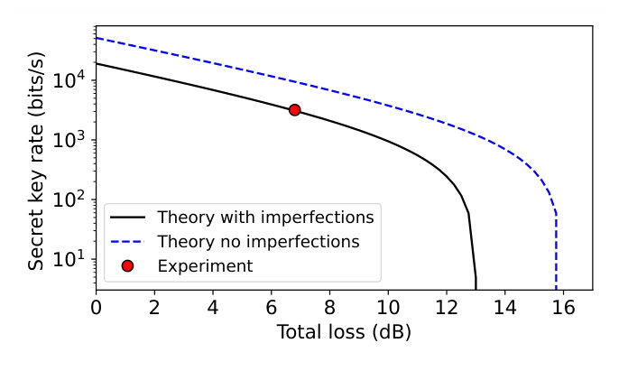
<figcaption class="paper-figure-caption"><b>Fig 4.</b> FIG. 4. Simulated key rate plot for experimental parameters, as well as key rate computed from experimental run. Simulation is performed by using error rate observed in experiment, but changing loss. Computed with sampling parameters εPNE = εa = εb = ε0 = εAT,Z = 10−9 (See Appendix A for details), postprocessing parameters εPA = εEV = 10−9, and probability of Z rounds used for eZ estimation of 1%. Horizontal axis begins at 0, assuming lossless components. Note accounting for imperfections drastically reduces key rate by nearly an order of magnitude, although further refinements of proof techniques will likely be able to decrease this impact.</figcaption>
</figure>
<figure class="paper-figure-card">
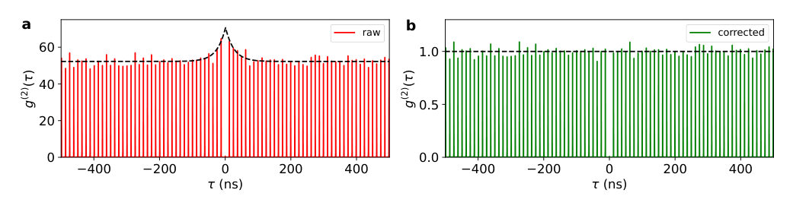
<figcaption class="paper-figure-caption"><b>Fig 5.</b> FIG. 5. (a): Measured (raw) second order autocorrelation g(2)(τ)-histogram of the employed QD emitter. (b) Blinking-corrected g(2)(τ)-histogram by dividing the data in (a) by Eq. B1 for the paramters listed in Tab III.</figcaption>
</figure>
</div>

<p><strong>Summary.</strong> This paper experimentally demonstrates a robust Quantum Key Distribution (QKD) system using single photons from semiconductor quantum dots. Crucially, it advances the field by providing rigorous security analysis that accounts for unavoidable imperfections in real-world components like sources and detectors. The results show competitive performance, paving the way for practical, loophole-free quantum communication.</p>
<p><strong>Why it may be interesting.</strong> It provides a concrete bridge between theoretical quantum information security proofs and practical experimental realization, which is crucial for advancing photonic quantum communication technologies.</p>
<details>
<summary>Detailed structure</summary>
<p><strong>Main problem.</strong> The primary challenge is rigorously proving the security of Quantum Key Distribution (QKD) protocols when using real-world devices whose performance cannot be perfectly characterized.</p>
<p><strong>Main result.</strong> The authors demonstrate that a BB84 implementation using semiconductor quantum dots can achieve competitive, loophole-free performance by explicitly accounting for source imperfections and detector noise margins.</p>
<p><strong>Method.</strong> The work combines experimental measurement of key metrics (QBER, g^(2)(0)) with advanced theoretical security proofs that incorporate statistical bounds on unobservable quantities like the phase error rate.</p>
<p><strong>Model / system.</strong> The system is an experimental implementation of the BB84 protocol using single photons generated by a semiconductor quantum dot source and analyzed by superconducting nanowire single photon detectors (SNSPDs).</p>
<p><strong>Key observables.</strong> Quantum Bit Error Rate (QBER) ($\approx 3.51\%$), second-order correlation function g^(2)(0), and the calculated secure key length in bits.</p>
<p><strong>Important parameters / regimes.</strong> Source mean photon number ($\mu = 0.005$), detector relative efficiencies ($\vec{\eta}$), and error margins associated with device imperfections.</p>
<p><strong>Assumptions / limitations.</strong> The security analysis relies on recent theoretical advances that allow for imperfect characterization of devices, modeling the real source via Source Map arguments.</p>
<p><strong>Figures summary.</strong> Figures illustrate the experimental setup (BB84 diagram), confirm single-photon emission statistics using g^(2)(2) histograms, and compare simulated vs. measured key rates considering device imperfections.</p>
<p><strong>Paper structure.</strong> The paper progresses from establishing the need to address device loopholes in QKD security proofs, detailing the physical implementation using QD sources, presenting measurements of performance metrics (QBER), and concluding with a rigorous analysis bounding the achievable secure key rate under realistic noise models.</p>
</details>
<details>
<summary>Abstract</summary>
<p>Quantum key distribution (QKD) allows for provably secure key distribution between two trusted parties. Because the security and performance of QKD protocols rely on devices that behave according to specific assumptions, idealized or inaccurate assumptions about device behavior can introduce security loopholes. Real devices can never be perfectly characterized, and their performance metrics are always subject to certain error margins, which must be accounted for in a rigorous theoretical analysis. Only recently have rigorous finite-size results allowed for imperfect characterizations of devices (where device parameter have uncertainty margins) - an advance yet to be considered in experimental implementations of the BB84 protocol. In this work, we prove the security and analyze the performance of an implementation of the BB84 protocol using single photons generated by a semiconductor quantum dot light source in combination with dynamic polarization-state encoding. We consider the presence of incompletely characterized devices by accounting for imperfections in the single-photon source (in terms of finite g(2)(0)) as well as the receiver (non-ideal beam-splitters, finite detector efficiencies, and dark counts), all with error margins. The resulting protocol implementation shows competitive performance, paving the way towards practical and loop-hole free implementations of QKD.</p>
</details>
<p><sub><a href="#top">↑ back to top</a></sub></p>

<p><a id="paper-2607.18401"></a></p>
<h3 id="monolithic-printed-circuit-board-rf-trap-for-electrons"><a href="http://arxiv.org/abs/2607.18401v1">Monolithic printed-circuit board RF-trap for electrons</a></h3>
<p><strong>Authors:</strong> Zijue Luo, Jae Eu, Tianyi Wang, Boerge Hemmerling<br>
<strong>Type:</strong> experiment · <strong>Category:</strong> other · <strong>PDF:</strong> <a href="https://arxiv.org/pdf/2607.18401v1">https://arxiv.org/pdf/2607.18401v1</a><br>
<strong>Analysis basis:</strong> full PDF text, analyzed in chunks
<strong>Topic relevance:</strong> 🔥 <code>QC/QI experiment</code> <strong>4/5</strong> · <code>analog quantum simulation</code> <strong>1/5</strong> · <code>methods for driven-dissipative</code> <strong>1/5</strong> · <code>quantum measurements</code> <strong>1/5</strong> · <code>spintronics-quantum-optics interface</code> <strong>1/5</strong></p>
<div class="figure-strip-hint">↔ Scroll figures horizontally</div>
<div class="paper-figures-scroll">
<figure class="paper-figure-card">
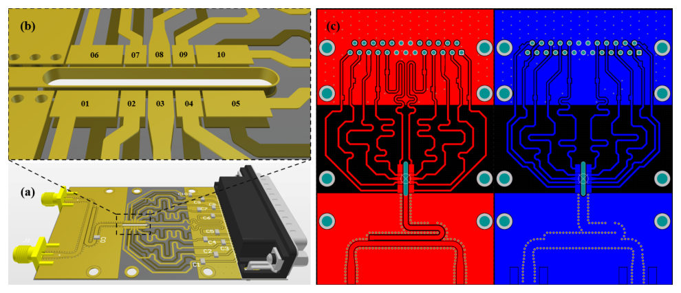
<figcaption class="paper-figure-caption"><b>Fig 1.</b> FIG. 1. (a) 3D model of the printed circuit board electron trap. The RF signal for the Paul trap is delivered to the board by an SMA-connected feedline (left side of the board), which is capacitively coupled to an on-board RF resonator. Electrons are trapped near the end of the resonator, at the center of the elongated plated slit. The DC signals are delivered by a D-sub connector (right side of board). (b) Zoomed view of the slit. The numbers 01 to 10 denote the DC electrodes on the top layer; a set of identical electrodes, 11 to 20, is located on the bottom layer. The slit is surrounded by a plated sidewall and a metal annular ring. (c) Schematics of the top (red) and bottom (blue) layers...</figcaption>
</figure>
<figure class="paper-figure-card">
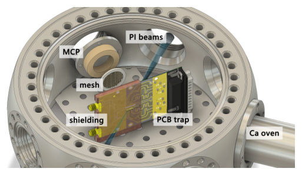
<figcaption class="paper-figure-caption"><b>Fig 2.</b> FIG. 3. Experimental apparatus. The PCB Paul trap is mounted at the center of a UHV vacuum chamber, with the calcium oven (not visible), copper mesh, and microchannel plate detector arranged along the adjacent viewport axes.</figcaption>
</figure>
<figure class="paper-figure-card">

<figcaption class="paper-figure-caption"><b>Fig 3.</b> FIG. 2. Finite-element simulation of trap. (a) Pseudopo- tential along the ˆx-axis (perpendicular to the trap board) and (b) along the ˆy-axis (along the slit width). The fitted secular frequencies are ωx = 2π × 157.6 MHz, ωy = 2π × 161.2 MHz, and the trap depths are Ux = 0.59 eV and Uy = 0.68 eV. All simulations assume an RF input power of 36 dBm.</figcaption>
</figure>
<figure class="paper-figure-card">

<figcaption class="paper-figure-caption"><b>Fig 4.</b> FIG. 4. Schematic diagram of the experiment. The oven provides a thermal beam of calcium atoms, which are photoionized to produce trappable electrons. The Paul trap is driven at 1.732 GHz. Further details are explained in the main text.</figcaption>
</figure>
<figure class="paper-figure-card">

<figcaption class="paper-figure-caption"><b>Fig 5.</b> FIG. 5. Trapped electron lifetime measurement. The data is fitted with an exponential decay, which yields a life- time of 2.13 ms.</figcaption>
</figure>
</div>

<p><strong>Summary.</strong> The paper reports the successful realization of an electron Paul trap fabricated entirely on a monolithic printed circuit board (PCB). This novel design provides mechanical stability for trapping electrons, which serve as qubits. The experiment characterized the trap's performance by measuring lifetimes and determining high secular frequencies using RF/DC field analysis.</p>
<p><strong>Why it may be interesting.</strong> This work directly addresses hardware engineering challenges in quantum computing platforms. Using a single-PCB approach significantly enhances scalability and robustness compared to complex multi-component traps, making it highly relevant for solid-state or chip-based AMO quantum systems.</p>
<details>
<summary>Detailed structure</summary>
<p><strong>Main problem.</strong> The goal is to develop a practical, scalable platform for quantum information processing using qubits encoded in trapped electron spins, moving away from traditional Penning traps.</p>
<p><strong>Main result.</strong> The authors successfully demonstrated trapping electrons on a monolithic PCB Paul trap, achieving measurable lifetimes of 2.13 ms and high secular frequencies up to 90 MHz.</p>
<p><strong>Method.</strong> The experiment involves fabricating the trap entirely on a single printed circuit board (PCB) and characterizing electron confinement using RF/DC electric fields and measuring decay rates.</p>
<p><strong>Model / system.</strong> The physical system is an electron Paul trap built monolithically on a PCB substrate, utilizing both RF pseudopotentials for radial confinement and DC electrodes for axial confinement. The trapping potential depth was characterized to be around 0.6 eV.</p>
<p><strong>Key observables.</strong> Trapped electron lifetime ($   au = 2.13$ ms), secular frequencies ($\omega_x \approx 2\pi 	imes 158$ MHz, $\omega_y \approx 2\pi 	imes 161$ MHz), and motional frequency resonances.</p>
<p><strong>Important parameters / regimes.</strong> RF drive frequency ($\Omega_{	ext{rf}} = 2\pi 	imes 1.732$ GHz), trap depths ($0.59-0.68$ eV), and vacuum pressure ($\approx 5 	imes 10^{-8}$ Torr).</p>
<p><strong>Assumptions / limitations.</strong> The short lifetime is attributed to field imperfections, lack of active cooling, and difficulty compensating excess micromotion compared to ion traps.</p>
<p><strong>Figures summary.</strong> Figures illustrate the 3D model of the PCB trap structure, finite-element simulations showing pseudopotentials and calculated frequencies, and experimental setups detailing signal generation for lifetime and motional frequency measurements.</p>
<p><strong>Paper structure.</strong> The paper details the design of a monolithic Paul trap on a PCB, presents characterization results including measured electron lifetimes and spectral fitting to determine axial and radial secular frequencies by varying DC potentials and RF power.</p>
</details>
<details>
<summary>Abstract</summary>
<p>Qubits encoded in the spin of trapped electrons have been proposed as a promising novel platform for quantum information processing. While trapping of electrons has been largely carried out in Penning traps for precision measurement purposes, it is desirable to use linear Paul traps instead, leaning on the successes of trapped ion quantum processors. Here we present a Paul trap for electrons made of a single printed circuit board. Our approach requires no assembly and the rigid design minimizes manufacturing intolerances. We characterize the trap performance and observe trapped electron lifetimes of 2.13 ms and secular frequencies of up to 90 MHz.</p>
</details>
<p><sub><a href="#top">↑ back to top</a></sub></p>

<p><a id="paper-2607.19070"></a></p>
<h3 id="how-to-improve-the-discrimination-power-of-classically-simulable-measurements"><a href="http://arxiv.org/abs/2607.19070v1">How to improve the discrimination power of classically simulable measurements?</a></h3>
<p><strong>Authors:</strong> Yiran Wang, Yongming Li<br>
<strong>Type:</strong> theory · <strong>Category:</strong> quantum information and computing · <strong>PDF:</strong> <a href="https://arxiv.org/pdf/2607.19070v1">https://arxiv.org/pdf/2607.19070v1</a><br>
<strong>Analysis basis:</strong> full PDF text, analyzed in chunks
<strong>Topic relevance:</strong> 🔥 <code>quantum measurements</code> <strong>4/5</strong> · <code>entanglement &amp; information structure</code> <strong>1/5</strong> · <code>measurement-induced transitions</code> <strong>1/5</strong></p>
<div class="figure-strip-hint">↔ Scroll figures horizontally</div>
<div class="paper-figures-scroll">
<figure class="paper-figure-card">

<figcaption class="paper-figure-caption"><b>Fig 1.</b> FIG. 1. The discrete Wigner function of the Strange state.</figcaption>
</figure>
<figure class="paper-figure-card">

<figcaption class="paper-figure-caption"><b>Fig 2.</b> FIG. 2. General state discrimination framework under CPWP protocol assisted by quantum memories and catalysts. In each round, the input state ρA Z j and the memory state µC j are jointly processed by a CPWP instrument, producing a classical guess Y j and an updated memory state µC j+1. The updated memory is reused in the next round, thereby allowing information from previous rounds to affect later discrimination strategies. In the catalytic setting, the memory state remains unchanged in every round, i.e., µC 1 = µC j for all j ∈{2, · · · , n}.</figcaption>
</figure>
</div>

<p><strong>Summary.</strong> This paper investigates methods to boost the discrimination power of measurements restricted by classical simulation constraints. By framing this as a channel simulation problem, it derives theoretical bounds and proves that while magic resources can help in some cases, they cannot improve performance beyond the optimal PWF measurement limit when using catalysts or memories for specific state pairs.</p>
<p><strong>Why it may be interesting.</strong> It rigorously quantifies the gap between what can be achieved classically (CSMs) versus globally, providing fundamental limits on quantum information tasks that are crucial for understanding resource theories in open quantum systems.</p>
<details>
<summary>Detailed structure</summary>
<p><strong>Main problem.</strong> The central problem is determining how to enhance the discrimination power of Classically Simulable Measurements (CSMs) beyond their inherent limitations.</p>
<p><strong>Main result.</strong> The paper establishes a no-go theorem proving that for distinguishing certain states, neither finite quantum catalysts nor quantum memories can improve the optimal success probability achievable with CSMs.</p>
<p><strong>Method.</strong> The authors relate the measurement problem to channel simulation costs and utilize supermartingale analysis (Azuma's inequality) to derive bounds on the success probability in resource-assisted discrimination protocols.</p>
<p><strong>Model / system.</strong> The study is set in odd-prime-dimensional quantum systems, focusing on distinguishing pairs of states ($\mu_C$ and $\gamma_C$) using measurements characterized by positive discrete Wigner functions (PWF POVMs).</p>
<p><strong>Key observables.</strong> Optimal success probability of discrimination ($p_{	ext{opt}}$), the magic cost ($\mathcal{E}_E^c$), and the simulation cost required to simulate quantum channels.</p>
<p><strong>Important parameters / regimes.</strong> Odd-prime dimension $d=j^n$, number of resources/rounds ($n$), and the degree of classical simulability (PWF property).</p>
<p><strong>Assumptions / limitations.</strong> The analysis is restricted to distinguishing pairs of states with positive Wigner functions (PWF states) and assumes the use of CPWP measurement channels.</p>
<p><strong>Paper structure.</strong> The paper first defines CSMs via PWF POVMs, relates this to channel simulation costs, derives bounds on this cost using magic resources, provides a concrete example where enhancement occurs, and concludes with the no-go theorem for catalysts/memories.</p>
</details>
<details>
<summary>Abstract</summary>
<p>Classically simulable measurements (CSMs) constitute an important class of restricted measurements in the odd-prime-dimensional magic resource theory, referring to those measurements with positive discrete Wigner functions. Since their discrimination power is weaker than that of global measurements, it is necessary to study how to improve the discrimination power of CSMs. In this paper, we consider three methods to improve the discrimination power of CSMs, including adding magic resources, using quantum catalysts, and using quantum memories. Specifically, we relate measurements with positive discrete Wigner functions to completely positive Wigner-preserving measurement channels, thereby transforming the problem of improving the discrimination power of CSMs into the problem of determining how many magic resources are required to simulate quantum channels using free operations. Based on this, we derive the lower and upper bounds of the simulation cost. Moreover, we provide a concrete example for which these bounds coincide and prove that consumable magic resources can enhance the discrimination power of CSMs. Finally, we establish a no-go theorem, which shows that for discriminating a pair of states with positive Wigner functions, neither finite-dimensional quantum catalysts nor finite-dimensional quantum memories can improve the optimal success probability of discrimination using CSMs.</p>
</details>
<p><sub><a href="#top">↑ back to top</a></sub></p>

<p><a id="paper-2607.19187"></a></p>
<h3 id="simultaneous-calibration-of-rotation-and-phase-errors-in-a-single-experiment"><a href="http://arxiv.org/abs/2607.19187v1">Simultaneous calibration of rotation and phase errors in a single experiment</a></h3>
<p><strong>Authors:</strong> Tien D. Nguyen, Hung Q. Nguyen<br>
<strong>Type:</strong> experiment · <strong>Category:</strong> quantum information and computing · <strong>PDF:</strong> <a href="https://arxiv.org/pdf/2607.19187v1">https://arxiv.org/pdf/2607.19187v1</a><br>
<strong>Analysis basis:</strong> full PDF text, analyzed in chunks
<strong>Topic relevance:</strong> 🔥 <code>QC/QI experiment</code> <strong>4/5</strong> · <code>quantum measurements</code> <strong>2/5</strong></p>
<div class="figure-strip-hint">↔ Scroll figures horizontally</div>
<div class="paper-figures-scroll">
<figure class="paper-figure-card">

<figcaption class="paper-figure-caption"><b>Fig 1.</b> FIG. 1. DRAPE (DRAG-APE) protocol. (a) Bloch-sphere geometry of the gate sequence: an imperfect |−y⟩state is prepared, k pseudo-identity pairs encode ϵ and δ on its polar and azimuthal angles, and a final y-rotation converts the accumulated phase into a measurable population. (b) Per-shot Fisher information versus the DRAG sweep β/β0: Fβ0β0 (solid blue) and Fϵϵ (dashed red) for k = 1 and 11. At the crossing point β0 (dotted line) Fβ0β0 is maximal while Fϵϵ is minimal; squares mark the Fϵϵ peak. (c) DRAPE measurement on the |j = 1⟩↔|j + 1 = 2⟩transition of an IBM transmon: P|j=1⟩versus β for k = 1, . . . , 11; solid curves are fits to Eq. (9). Inset: zoom on the crossing locus that...</figcaption>
</figure>
<figure class="paper-figure-card">

<figcaption class="paper-figure-caption"><b>Fig 2.</b> FIG. 2. Validation of the DRAPE corrections. (a) The APE and ARE circuits. (b) Pulse shapes: bare Gaussian versus DRAPE-calibrated Gaussian, whose amplitude is rescaled to cancel ˆϵ and to which a DRAG quadrature Ωy = −(ˆβ0/∆2) ˙Ωx is added to cancel the phase error. (c) APE result: P|j=1⟩ versus the final-axis azimuth ϕ for k = 1, 3, 5, 7; the Ramsey fringes fan out with k before correction and collapse onto a single curve after. (d) ARE result: P|j=1⟩after ℓrepetitions of X(π/2)X(π/2); the population drifts from the ideal 1/2 before correction and stays near 1/2 after.</figcaption>
</figure>
</div>

<p><strong>Summary.</strong> The paper introduces the DRAPE protocol to overcome the limitations of sequential error characterization in superconducting qubits. By designing a single Ramsey-type measurement sequence, it simultaneously calibrates both rotation and phase errors ($\epsilon$ and $\delta$). This method significantly improves gate fidelity by achieving superior scaling for phase estimation compared to traditional iterative techniques.</p>
<p><strong>Why it may be interesting.</strong> This work directly addresses a critical bottleneck in quantum computation: characterizing complex, coupled gate errors without resorting to slow, iterative calibration routines. The ability to achieve Heisenberg scaling for one error while maintaining high precision on another simultaneously is highly valuable.</p>
<details>
<summary>Detailed structure</summary>
<p><strong>Main problem.</strong> Coherent control errors, specifically over/under-rotation ($\epsilon$) and phase error ($\delta$), in weakly anharmonic qubits require simultaneous calibration to reach fault-tolerance thresholds.</p>
<p><strong>Main result.</strong> The proposed DRAPE protocol allows for the single-shot, simultaneous calibration of both $\epsilon$ and $\delta$, achieving Heisenberg scaling for phase estimation while saturating the standard quantum limit for rotation error.</p>
<p><strong>Method.</strong> A Ramsey-type diagnostic sequence (DRAPE) is used to measure population probabilities $P_{|j
angle}$ based on a composite unitary operator, allowing simultaneous fitting of both error parameters via Fisher information analysis.</p>
<p><strong>Model / system.</strong> The study uses weakly anharmonic qubits, experimentally demonstrated on the $|1
angle \leftrightarrow |2
angle$ transition of an IBM transmon superconducting qubit. The underlying physics is modeled using effective Hamiltonians derived via Schrieffer-Wolff and Magnus expansions.</p>
<p><strong>Key observables.</strong> Population probabilities $P_{|j
angle}$ (or $P_{|j+1
angle}$) measured after the gate sequence; Fisher Information ($F_{\xi\xi}$).</p>
<p><strong>Important parameters / regimes.</strong> Error parameters ($\epsilon$, $\delta$); Number of repetitions ($N$) leading to Heisenberg scaling for phase estimation.</p>
<p><strong>Assumptions / limitations.</strong> The analysis is restricted to the weak-driving regime, and derivations rely on truncations (e.g., $O((\Omega/\Delta^2)^2)$) in Hamiltonian expansions.</p>
<p><strong>Figures summary.</strong> Figures numerically confirm that the Fisher information for phase ($\delta$) shows a maximum at the crossing point $eta_0$, while rotation error ($\epsilon$) is estimated by analyzing slopes away from this point.</p>
<p><strong>Paper structure.</strong> The paper first derives the coupled error parametrization, then introduces the DRAPE protocol based on measuring population probabilities. It analyzes the scaling of the Fisher information for both parameters at the optimal crossing point $eta_0$, culminating in experimental demonstration and independent validation using established protocols (ARE/APE).</p>
</details>
<details>
<summary>Abstract</summary>
<p>In weakly anharmonic qubits, coherent control errors take two generic forms -- over/under-rotation and phase errors -- whose suppression normally requires iterated experiments. We show that, for any symmetric $π/2$ pulse in the weak-driving regime, both follow from a single parametrization, $\mathcal{X}(π/2)=Z(δ)X(π/2+ε)Z(δ)$, that ties the rotation error $ε$ and the phase error $δ$ directly to the system parameters. The parametrization enables DRAPE, a Ramsey-type protocol in which sweeping the phase-error correction reveals a crossing point that fixes both corrections at once. The phase correction is estimated with Heisenberg scaling while the rotation error saturates the standard quantum limit. We experimentally demonstrate DRAPE by calibrating a $π/2$ gate on the $|1\rangle\leftrightarrow |2\rangle$ transition of an IBM transmon, reducing the over-rotation from $0.997^\circ$ to $-0.007^\circ$ and the phase error from $2.52^\circ$ to $0.0052^\circ$ per gate, validated independently by phase- and rotation-error amplification protocols.</p>
</details>
<p><sub><a href="#top">↑ back to top</a></sub></p>

<p><a id="paper-2607.18400"></a></p>
<h3 id="magic-protected-entanglement-and-clifford-irreducible-structure-in-magic-state-space"><a href="http://arxiv.org/abs/2607.18400v1">Magic-protected entanglement and Clifford-irreducible structure in magic state space</a></h3>
<p><strong>Authors:</strong> Alejandro Borda Kuhlmann, Julian Rincon<br>
<strong>Type:</strong> theory · <strong>Category:</strong> quantum information and computing · <strong>PDF:</strong> <a href="https://arxiv.org/pdf/2607.18400v1">https://arxiv.org/pdf/2607.18400v1</a><br>
<strong>Analysis basis:</strong> full PDF text, analyzed in chunks
<strong>Topic relevance:</strong> 🔥 <code>entanglement &amp; information structure</code> <strong>4/5</strong></p>
<div class="figure-strip-hint">↔ Scroll figures horizontally</div>
<div class="paper-figures-scroll">
<figure class="paper-figure-card">

<figcaption class="paper-figure-caption"><b>Fig 1.</b> FIG. 2. Kernel density estimates of the empirical MS prob- ability distributions (PDF), and their mean (vertical dashed lines), for ensembles sampled from M(1), M(2), and M(3), together with Haar-random states. The plot provides a qual- itative visualization of the regime separation: the ensemble sampled from M(1) retains a broad distribution, while the ensemble sampled from M(3) becomes more sharply concen- trated. The comparison with Haar-random states makes the difference in shape and variance particularly transparent.</figcaption>
</figure>
<figure class="paper-figure-card">

<figcaption class="paper-figure-caption"><b>Fig 2.</b> FIG. 3. Empirical cumulative distribution function (CDF) collapse of the standardized positive d MS values, (d MS−µn)/σn, for ensembles sampled from M(k) with k = 1, 2, 3, using n ∈[7, 12]. Distinct markers indicate system size. The en- semble sampled from M(1) remains comparatively broad and follows the normal reference (continuous line) more closely, consistent with approximately Gaussian finite-size fluctua- tions. By contrast, the ensembles sampled from M(2) and M(3) concentrate much more sharply, displaying a Haar-like suppression of large deviations from the typical value.</figcaption>
</figure>
<figure class="paper-figure-card">

<figcaption class="paper-figure-caption"><b>Fig 3.</b> FIG. 4. Moment analysis for the positive d MS values. Data points for n = 4 −12 are shown to display the early finite- size crossover, while the power-law fits (continuous lines) are performed only over n = 7 −12. Dotted lines are guides to the eye. The mean sets the scale of d MS, whereas the variance and Fano factor quantify absolute and relative fluctuations. The power-law exponents are defined by γ. The rapid sup- pression of both fluctuation measures for ensembles sampled from M(2) and M(3) indicates strong self-averaging in the W-magic regime. The ensemble sampled from M(1) remains broad and only weakly self-averaging over the same range.</figcaption>
</figure>
<figure class="paper-figure-card">

<figcaption class="paper-figure-caption"><b>Fig 4.</b> FIG. 7. Normal Q-Q diagnostics for the standardized posi- tive d MS fluctuations, with pointwise 95% confidence bands. Distinct markers indicate system size. The ensemble sampled from M(1) is comparatively close to the normal reference, while that sampled from M(3) shows systematic tail devia- tions, consistent with strong concentration rather than con- vergence to a finite-width Gaussian fluctuation law.</figcaption>
</figure>
<figure class="paper-figure-card">

<figcaption class="paper-figure-caption"><b>Fig 5.</b> FIG. 6. Histogram-based probability density function (PDF) collapse of the standardized positive d MS values, (d MS−µn)/σn, for ensembles sampled from M(1) and M(3), using n ∈[7, 12]. Distinct markers indicate system size. The ensemble sampled from M(1) remains close to the normal reference (continu- ous line), whereas the ensemble sampled from M(3) shows stronger concentration and clearer deviations from a finite- width Gaussian profile.</figcaption>
</figure>
</div>

<p><strong>Summary.</strong> This paper introduces 'magical entanglement' as an invariant measure of bipartite entanglement protected from simplification by Clifford gates. It establishes a framework based on Clifford orbits to classify states into T-magic and W-magic regimes. This distinction helps characterize the fundamental, irreducible quantum correlations present in complex quantum systems.</p>
<p><strong>Why it may be interesting.</strong> This work provides a powerful, resource-theoretic diagnostic tool for quantifying genuine quantum correlations that cannot be simulated or removed by local Clifford operations, which is central to understanding quantum computation complexity.</p>
<details>
<summary>Detailed structure</summary>
<p><strong>Main problem.</strong> The paper develops a framework to study 'magic-protected entanglement' (magical entanglement), which quantifies the bipartite entanglement remaining after optimal simplification by Clifford operations.</p>
<p><strong>Main result.</strong> It identifies two distinct regimes: the T-magic regime, where protected entanglement is weak and state-dependent, and the W-magic regime, where entanglement is strongly self-averaging and irreducible with respect to Clifford reduction.</p>
<p><strong>Method.</strong> The core method involves developing a Clifford-orbit framework by defining magical entanglement as the minimum bipartite entanglement achievable over all states reachable via Clifford gates.</p>
<p><strong>Model / system.</strong> The study analyzes pure quantum states $|\psi
angle$ in $n$ qubits, focusing on how their entanglement structure is preserved or destroyed under the action of the Clifford group ($C_n$).</p>
<p><strong>Key observables.</strong> Magical Entanglement ($    ext{MS}$), which serves as an orbit-level invariant; canonical representatives and spectra characterizing the Clifford-irreducible structure.</p>
<p><strong>Important parameters / regimes.</strong> The classification depends on whether entanglement is tied to nonstabilizerness, distinguishing between T-magic (local nonstabilizer resources) and W-magic (nonlocal nonstabilizer requirements).</p>
<p><strong>Assumptions / limitations.</strong> The analysis assumes that the physically relevant quantum correlations are those protected from removal by Clifford operations.</p>
<p><strong>Figures summary.</strong> Figures illustrate PDF collapse and Q-Q plots comparing standardized fluctuations of $ ext{MS}$ values for different ensembles, showing systematic deviations from Gaussian behavior in W-magic cases.</p>
<p><strong>Paper structure.</strong> The paper builds a mathematical framework around the Clifford orbit invariance of entanglement measures. It then uses this invariant to classify states into T-magic and W-magic regimes by analyzing how nonstabilizerness protects quantum correlations against stabilizer reduction.</p>
</details>
<details>
<summary>Abstract</summary>
<p>We develop a Clifford-orbit framework for studying magic-protected entanglement, which we refer to as magical entanglement: the part of bipartite entanglement that remains after optimal stabilizer simplification. This construction leverages residual entanglement under Clifford reduction as a state-level organizing principle for magic state space. It defines canonical representatives, spectra, and ranks that characterize the Clifford-irreducible structure of a state. We identify two regimes of the magic-entanglement interplay. In the $T$-magic regime, local nonstabilizer resources can coexist with entanglement, but the protected component remains weak and state-dependent. In the $W$-magic regime, by contrast, entanglement is Clifford-irreducibly tied to nonstabilizerness, producing typical, strongly self-averaging behavior. Analytical examples and random-circuit numerics support a crossover from broad $T$-magic fluctuations to concentrated, Haar-like $W$-magic behavior. These results identify magical entanglement as an orbit-level diagnostic of how nonstabilizerness protects quantum correlations against Clifford reduction.</p>
</details>
<p><sub><a href="#top">↑ back to top</a></sub></p>

<p><a id="paper-2607.18643"></a></p>
<h3 id="monogamy-inequalities-of-entanglement-of-assistance-in-math312math-systems"><a href="http://arxiv.org/abs/2607.18643v1">Monogamy inequalities of entanglement of assistance in $2\otimes 2\otimes d$ systems</a></h3>
<p><strong>Authors:</strong> Xue-Na Zhu, Gui Bao, Zhi-Xiang Jin, Shao-Ming Fei, Tao Li<br>
<strong>Type:</strong> theory · <strong>Category:</strong> quantum information and computing · <strong>PDF:</strong> <a href="https://arxiv.org/pdf/2607.18643v1">https://arxiv.org/pdf/2607.18643v1</a><br>
<strong>Analysis basis:</strong> full PDF text, analyzed in chunks
<strong>Topic relevance:</strong> 🔥 <code>entanglement &amp; information structure</code> <strong>4/5</strong></p>
<div class="figure-strip-hint">↔ Scroll figures horizontally</div>
<div class="paper-figures-scroll">
<figure class="paper-figure-card">

<figcaption class="paper-figure-caption"><b>Fig 1.</b> Low-resolution page preview, page 2</figcaption>
</figure>
<figure class="paper-figure-card">

<figcaption class="paper-figure-caption"><b>Fig 2.</b> Low-resolution page preview, page 3</figcaption>
</figure>
<figure class="paper-figure-card">

<figcaption class="paper-figure-caption"><b>Fig 3.</b> Low-resolution page preview, page 4</figcaption>
</figure>
<figure class="paper-figure-card">

<figcaption class="paper-figure-caption"><b>Fig 4.</b> Low-resolution page preview, page 5</figcaption>
</figure>
<figure class="paper-figure-card">

<figcaption class="paper-figure-caption"><b>Fig 5.</b> Low-resolution page preview, page 6</figcaption>
</figure>
</div>

<p><strong>Summary.</strong> This paper rigorously studies the monogamy relations for various entanglement measures, particularly focusing on the Concurrence of Assistance (CoA), in $2 \otimes 2 \otimes d$ quantum systems. It establishes a new explicit inequality relating bipartite concurrence, tangle, and CoA. These results provide deeper quantitative insights into how quantum correlations are distributed among multiple subsystems.</p>
<p><strong>Why it may be interesting.</strong> This work provides rigorous mathematical constraints on how entanglement can be distributed among multiple parties, which is fundamental knowledge for quantum cryptography and multipartite quantum computation protocols.</p>
<details>
<summary>Detailed structure</summary>
<p><strong>Main problem.</strong> The paper investigates the monogamy relations governing the distribution of quantum correlations, specifically focusing on the entanglement of assistance (CoA) in multipartite systems.</p>
<p><strong>Main result.</strong> A key monogamy inequality is established for $2 \otimes 2 \otimes d$ states: $C_2(
ho_{AB}) + T(
ho_{AC}) \le C_2(|\psi
angle A|BC) \le C_a^2(
ho_{AB}) + T(
ho_{AC})$.</p>
<p><strong>Method.</strong> The authors use detailed mathematical analysis, including examining singular values derived from state decompositions across multiple cases to prove the required inequalities.</p>
<p><strong>Model / system.</strong> The study focuses on tripartite pure quantum states $|\psi
angle ABC$ within a $2 \otimes 2 \otimes d$ dimensional Hilbert space, involving qubits (A and B) and an ancillary system (C).</p>
<p><strong>Key observables.</strong> Concurrence ($C$), Tangle ($T$), Concurrence of Assistance ($  ext{CoA}$ or $C_a$), and the three-partite concurrence.</p>
<p><strong>Important parameters / regimes.</strong> The dimensions are fixed to $2 \otimes 2 \otimes d$, with specific examples analyzed in $d=2$ and $d=3$.</p>
<p><strong>Assumptions / limitations.</strong> The analysis relies on characterizing entanglement measures for pure states and comparing them across different bipartite partitions.</p>
<p><strong>Paper structure.</strong> The paper introduces the problem by defining necessary correlation measures, derives specific inequalities (like $I_{\leftarrow}^2(
ho_{AB}) \le C_a^2(
ho_{AB})$), and culminates in proving the general monogamy relation for the tripartite concurrence.</p>
</details>
<details>
<summary>Abstract</summary>
<p>The monogamy relations characterize the distribution of quantum correlations among the multipartite quantum systems. We study the monogamy relations of the entanglement of assistance in $2\otimes 2\otimes d$ systems. We present explicitly the relations satisfied by the concurrence, the tangle and the concurrence of assistance, which can be used to derive rigorous monogamy relations. Detailed examples are given to illustrate our results.</p>
</details>
<p><sub><a href="#top">↑ back to top</a></sub></p>

<p><a id="paper-2607.18513"></a></p>
<h3 id="observation-of-a-power-transfer-controlled-by-the-phase-of-a-quantum-superposition"><a href="http://arxiv.org/abs/2607.18513v1">Observation of a power transfer controlled by the phase of a quantum superposition</a></h3>
<p><strong>Authors:</strong> Nathanaël Cottet, Sébastien Jezouin, Bogdan Reznychenko, Alexia Auffèves, Benjamin Huard<br>
<strong>Type:</strong> experiment · <strong>Category:</strong> other · <strong>PDF:</strong> <a href="https://arxiv.org/pdf/2607.18513v1">https://arxiv.org/pdf/2607.18513v1</a><br>
<strong>Analysis basis:</strong> full PDF text, analyzed in chunks
<strong>Topic relevance:</strong> <code>driven-dissipative phase transition</code> <strong>3/5</strong> · <code>interference shaping light</code> <strong>3/5</strong> · <code>quantum optics experiment</code> <strong>3/5</strong> · <code>Tavis-Cummings &amp; cavity-many-emitter</code> <strong>2/5</strong> · <code>analog quantum simulation</code> <strong>2/5</strong> · <code>correlated / nonlocal dissipation</code> <strong>2/5</strong> · <code>correlated cavity matter</code> <strong>2/5</strong> · <code>methods for driven-dissipative</code> <strong>2/5</strong> · <code>non-equilibrium dynamics</code> <strong>2/5</strong> · <code>non-equilibrium universality</code> <strong>2/5</strong> · <code>quantum measurements</code> <strong>2/5</strong> · <code>Keldysh / 2PI / non-Gaussian methods</code> <strong>1/5</strong> · <code>QC/QI experiment</code> <strong>1/5</strong> · <code>entanglement &amp; information structure</code> <strong>1/5</strong> · <code>measurement-induced transitions</code> <strong>1/5</strong></p>
<div class="figure-strip-hint">↔ Scroll figures horizontally</div>
<div class="paper-figures-scroll">
<figure class="paper-figure-card">

<figcaption class="paper-figure-caption"><b>Fig 1.</b> Figure 1: Power transfer mediated by the phase of a qubit. (a) A transmon superconducting qubit is resonantly driven through two transmission lines a and b leading to a power transfer Pa→b between them. (b) When the driving fields are set so that they drive the qubit with the same amplitude but opposite phases (here around σy), their net effect on the qubit vanishes. Still, the transferred power from one line into the other depends on the qubit coherence, here it is proportional to ⟨σx⟩.</figcaption>
</figure>
<figure class="paper-figure-card">

<figcaption class="paper-figure-caption"><b>Fig 2.</b> Figure 3: Evidence of power transfer. (left panel) The qubit is initialized in various superpositions of states with phases ϕ = 0 (plain line) and ϕ = π (dashed line) represented in a 2D projection of the Bloch sphere, before turning on the two drives. a) Time-resolved measurement of the difference between the output and input photon flux in line a, showing directionality depending on the phase (full circles for ϕ = 0 and empty circles for ϕ = π). The experimental data (points) is fitted with the theory (plain line) using the gain and a delay between the drives τd = 18 ns as fitting parameters. b) Control of the transfer direction by the phase of the superposition of states. The amplitude...</figcaption>
</figure>
<figure class="paper-figure-card">

<figcaption class="paper-figure-caption"><b>Fig 3.</b> Figure 4: Photon transfer efficiency. (a) Evolution of the outgoing photon flux mea- sured in a as a function of time for a qubit initialized in |g⟩+eiϕ|e⟩with ϕ = 0 (full circles) or ϕ = π (empty circles) with various input photon fluxes (bottom panel). It displays the transition from a flux dominated by spontaneous emission (red) with weak directionality to one where the input drive overcomes the emission of the qubit (blue). The highest directionality is obtained in the intermediate regime (green). (b) Experimental photon transfer efficiency obtained by integrating the photon flux for a time τ and (c) ideal the- oretical efficiency based on the qubit coherence times. The input fluxes and...</figcaption>
</figure>
</div>

<p><strong>Summary.</strong> The researchers demonstrated that a superconducting transmon qubit can transfer power directionally between two microwave transmission lines based solely on the relative phase ($\phi$) of its superposition state. By setting opposing input drives, they showed the output power oscillates as $\cos(\phi)$, proving that quantum coherence dictates the energy routing in this open quantum system.</p>
<p><strong>Why it may be interesting.</strong> This work provides a clean demonstration of quantum control over energy flow in an open quantum system (qubit coupled to waveguides), directly linking directional photon emission to the phase coherence ($\phi$) of the emitter, which is central to understanding quantum thermodynamics and measurement processes.</p>
<details>
<summary>Detailed structure</summary>
<p><strong>Main problem.</strong> To determine if the direction of energy flow (power transfer) between two spatially separated electromagnetic modes driven by a single qubit can be controlled by the quantum phase ($\phi$) of the qubit's superposition state.</p>
<p><strong>Main result.</strong> The power transfer exhibits a clear, continuous transition in direction as $\phi$ changes, following a $\cos(\phi)$ dependence. This directional pumping is fundamentally controlled by the qubit's coherence rather than classical drive parameters.</p>
<p><strong>Method.</strong> Time-resolved measurement of output photon flux in one transmission line while applying opposite-amplitude drives to two coupled lines.</p>
<p><strong>Model / system.</strong> The system uses a superconducting transmon qubit coupled to two microwave transmission lines. The dynamics are analyzed using input-output relations derived from the Hamiltonian, focusing on stimulated emission competing with reflected drive and spontaneous emission.</p>
<p><strong>Key observables.</strong> Output power in one line ($\langle a_{	ext{out}}^\dagger a_{	ext{out}}
angle$), photon routing efficiency ($\eta$), and the dependence of transfer amplitude on $\cos(\phi)$.</p>
<p><strong>Important parameters / regimes.</strong> The phase $\phi$ of the qubit superposition, the coherence parameter $\langle\sigma_x
angle$, and the ratio between spontaneous vs. stimulated emission rates.</p>
<p><strong>Assumptions / limitations.</strong> The directionality is limited by phase-independent contributions from reflected drive and spontaneous emission; the analysis assumes a lossless emitter coupled to the lines.</p>
<p><strong>Figures summary.</strong> Figures illustrate the setup showing power transfer driven by two lines, demonstrating that when drives cancel, power transfers via coherence ($\propto \langle\sigma_x
angle$). A key figure shows the output power varying as $\cos(\phi)$, confirming directionality switching.</p>
<p><strong>Paper structure.</strong> The paper establishes the physical model (qubit coupled to two lines), derives the outgoing photon flux equations, and then analyzes the directional transfer by setting input drives to cancel ($\Omega_a = -\Omega_b$), showing the dependence on $\cos(\phi)$ through time-resolved measurements.</p>
</details>
<details>
<summary>Abstract</summary>
<p>A driven qubit exchanges energy with the propagating modes that drive it. When two spatially separated modes drive a single qubit with opposite amplitudes, their net action on the qubit cancels. Yet the qubit can still transfer power from one mode to the other through stimulated emission. The directionality originates from opposite stimulated emission powers into each line. We realize this situation with a superconducting transmon qubit coupled to two transmission lines and show that the direction of the power flow is set by the phase $φ$ of the qubit superposition between its ground and excited states, rather than by any classical control parameter. From a time-resolved measurement of the output power in one line, we observe a transfer that varies as $\cosφ$ and hence changes direction between $φ=0$ and $φ=π$. The directionality of the total power flow is limited by the phase independent contributions of the reflected drive and of spontaneous emission, which sets a routing efficiency that we measure as a function of the input power. For an equal superposition of ground and excited qubit states (maximal coherence), the efficiency reaches $63\%$, close to the bound of $69\%$ expected from the measured qubit coherence times.</p>
</details>
<p><sub><a href="#top">↑ back to top</a></sub></p>

<p><a id="paper-2607.18562"></a></p>
<h3 id="nonlinear-optics-mediated-by-chiral-waveguide-qed-generation-of-momentum-anticorrelated-photon-pairs"><a href="http://arxiv.org/abs/2607.18562v1">Nonlinear Optics Mediated by Chiral Waveguide QED: Generation of Momentum-anticorrelated Photon Pairs</a></h3>
<p><strong>Authors:</strong> Wenqi Tong, Spencer J Walsh, H. Alaeian, F. Robicheaux<br>
<strong>Type:</strong> theory · <strong>Category:</strong> other · <strong>PDF:</strong> <a href="https://arxiv.org/pdf/2607.18562v1">https://arxiv.org/pdf/2607.18562v1</a><br>
<strong>Analysis basis:</strong> full PDF text, analyzed in chunks
<strong>Topic relevance:</strong> <code>analog quantum simulation</code> <strong>3/5</strong> · <code>driven-dissipative phase transition</code> <strong>3/5</strong> · <code>interference shaping light</code> <strong>3/5</strong> · <code>methods for driven-dissipative</code> <strong>3/5</strong> · <code>QC/QI experiment</code> <strong>2/5</strong> · <code>Tavis-Cummings &amp; cavity-many-emitter</code> <strong>2/5</strong> · <code>correlated cavity matter</code> <strong>2/5</strong> · <code>non-equilibrium dynamics</code> <strong>2/5</strong> · <code>Keldysh / 2PI / non-Gaussian methods</code> <strong>1/5</strong> · <code>correlated / nonlocal dissipation</code> <strong>1/5</strong> · <code>entanglement &amp; information structure</code> <strong>1/5</strong> · <code>non-equilibrium universality</code> <strong>1/5</strong></p>
<div class="figure-strip-hint">↔ Scroll figures horizontally</div>
<div class="paper-figures-scroll">
<figure class="paper-figure-card">

<figcaption class="paper-figure-caption"><b>Fig 1.</b> FIG. 1. Schematics of the system: Two transmons chirally coupled to a 1D waveguide is driven by two continuous-wave fields, Ωwg through the waveguide and Ωd by the side port, with the same detuning.</figcaption>
</figure>
<figure class="paper-figure-card">

<figcaption class="paper-figure-caption"><b>Fig 2.</b> FIG. 2. On-resonance incoherent transmission probability af- ter one chiral transmon as a function of normalized Rabi fre- quency. The purple symbols refer to the numerical calculation results from Eq. (13) while the red solid line corresponds to the analytical expression from Eq. (15).</figcaption>
</figure>
<figure class="paper-figure-card">

<figcaption class="paper-figure-caption"><b>Fig 3.</b> FIG. 4. Second-order correlation function of the incoherent component for Ω= 0.5 √</figcaption>
</figure>
<figure class="paper-figure-card">

<figcaption class="paper-figure-caption"><b>Fig 4.</b> FIG. 3. Power spectrum density of the incoherent compo- nent as a function of the normalized detuning, ∆/Γ, for Ω= 0.5 √</figcaption>
</figure>
<figure class="paper-figure-card">

<figcaption class="paper-figure-caption"><b>Fig 5.</b> FIG. 5. Incoherent transmission after one (blue dashed line) and two (red solid line) chiral transmons as a function of normalized detuning at Ω/ √</figcaption>
</figure>
</div>

<p><strong>Summary.</strong> This paper explores how chiral coupling between transmons and a waveguide can mediate nonlinear quantum optical effects to generate momentum-anticorrelated photon pairs. By combining waveguide driving with independently tunable local drives, the researchers demonstrate precise control over the transmitted light's quantum statistics, tuning it from anti-bunched to super-bunched regimes.</p>
<p><strong>Why it may be interesting.</strong> This work bridges superconducting circuit QED with quantum optics concepts like nonlinear light generation and photon correlation engineering, providing a platform for realizing complex quantum optical phenomena in solid-state systems.</p>
<details>
<summary>Detailed structure</summary>
<p><strong>Main problem.</strong> The research investigates nonlinear optics mediated by chiral waveguide Quantum Electrodynamics (QED) to achieve the generation of momentum-anticorrelated photon pairs.</p>
<p><strong>Main result.</strong> The interplay between waveguide driving and local driving allows for the engineering of quantum statistics in the transmitted field, enabling tunable control over $g^{(2)}(0)$ across anti-bunched, coherent, and strongly bunched regimes.</p>
<p><strong>Method.</strong> The study employs both semi-classical simulations (using input-output theory) and full quantum wavefunction calculations to analyze light transmission through coupled transmon qubits.</p>
<p><strong>Model / system.</strong> The system consists of multiple transmons (superconducting qubits) chirally coupled to a one-dimensional waveguide. The dynamics are governed by a Hamiltonian incorporating local driving, waveguide coupling, and dissipation via a Lindblad master equation.</p>
<p><strong>Key observables.</strong> Second-order correlation function ($g^{(2)}(0)$), coherent transmission amplitude ($\langle\hat{\alpha}
angle$), and the power spectrum density of the incoherent component.</p>
<p><strong>Important parameters / regimes.</strong> Rabi frequencies ($\Omega_{wg}, \Omega_d$), detunings ($\Delta_n$), and the coupling strength ($\Gamma$).</p>
<p><strong>Assumptions / limitations.</strong> The analysis assumes $\hbar=1$, perfect coupling efficiency, and utilizes approximations like Born-Markov for some simulations.</p>
<p><strong>Figures summary.</strong> Figures illustrate the system setup (transmons coupled to a waveguide) and show quantitative results such as $T_{inc}$ vs. Rabi frequency, power spectra of the incoherent component, and $g^{(2)}(	au)$ confirming bunching behavior.</p>
<p><strong>Paper structure.</strong> The paper progresses from defining the physical model (Hamiltonian/Master Equation) to analyzing coherent transmission via input-output theory, then detailing how single or multiple chiral transmons modify photon statistics by generating an incoherent component, which can be controlled using local driving fields.</p>
</details>
<details>
<summary>Abstract</summary>
<p>In recent years, chiral quantum optics has emerged as an active research area due to the promising applications in quantum information processing as well as nonlinear optics. We present results on the properties of the incoherent component of the transmitted light after transmons chirally coupled to a waveguide. The well-known resonance fluorescence of one chiral transmon resembles nonlinear quantum optics as it can convert the coherent light, with photons having spatially extensive coherence and Poisson distribution, into a field with spatially localized coherence and bunching photon statistics. However, another chiral transmon can undo the effect of the first transmon regardless of the Rabi frequency under the idealization involved in this work. A full wavefunction calculation shows that, in the weak driving limit, this incoherent light mainly comes from two-photon processes - one chiral transmon converts two independent photons into a photon pair with opposite momentum shift. In addition to the driving through the waveguide, a local driving with independently tunable amplitude and phase can address each transmon individually. The interplay between the waveguide driving and local driving modulates the contribution of the incoherent transmission and hence enables the engineering of the quantum statistics of the transmitted field, with tunable $g^{(2)}(0)$ spanning anti-bunched, coherent, and strongly bunched regimes.</p>
</details>
<p><sub><a href="#top">↑ back to top</a></sub></p>

<p><a id="paper-2607.18702"></a></p>
<h3 id="a-reversible-continuous-variable-photonic-memory-architecture-based-on-displacement-evolved-coherent-state-dynamics"><a href="http://arxiv.org/abs/2607.18702v1">A Reversible Continuous-Variable Photonic Memory Architecture Based on Displacement-Evolved Coherent-State Dynamics</a></h3>
<p><strong>Authors:</strong> Sanjit Krishna G M<br>
<strong>Type:</strong> theory · <strong>Category:</strong> quantum information and computing · <strong>PDF:</strong> <a href="https://arxiv.org/pdf/2607.18702v1">https://arxiv.org/pdf/2607.18702v1</a><br>
<strong>Analysis basis:</strong> full PDF text, analyzed in chunks
<strong>Topic relevance:</strong> <code>analog quantum simulation</code> <strong>3/5</strong> · <code>methods for driven-dissipative</code> <strong>3/5</strong> · <code>non-equilibrium dynamics</code> <strong>3/5</strong> · <code>correlated / nonlocal dissipation</code> <strong>2/5</strong> · <code>driven-dissipative phase transition</code> <strong>2/5</strong> · <code>entanglement &amp; information structure</code> <strong>2/5</strong> · <code>quantum measurements</code> <strong>2/5</strong> · <code>Keldysh / 2PI / non-Gaussian methods</code> <strong>1/5</strong> · <code>Tavis-Cummings &amp; cavity-many-emitter</code> <strong>1/5</strong> · <code>correlated cavity matter</code> <strong>1/5</strong> · <code>interference shaping light</code> <strong>1/5</strong> · <code>measurement-induced transitions</code> <strong>1/5</strong> · <code>non-equilibrium universality</code> <strong>1/5</strong></p>
<div class="figure-strip-hint">↔ Scroll figures horizontally</div>
<div class="paper-figures-scroll">
<figure class="paper-figure-card">

<figcaption class="paper-figure-caption"><b>Fig 1.</b> Fig. 1: Comparison of coherent-state evolution in the pro- posed eight-qumode photonic memory architecture. (a) Ideal evolution in the absence of loss and noise, where the coherent amplitudes evolve solely through displacement updates. (b) Evolution under realistic operating conditions including optical loss, amplifier compensation, and noise. Although fluctuations accumulate over time, the latent-state structure remains preserved, demonstrating the robustness of the storage mechanism.</figcaption>
</figure>
<figure class="paper-figure-card">

<figcaption class="paper-figure-caption"><b>Fig 2.</b> Fig. 2: Average retrieval fidelity under different noise levels, averaged over 50 independent realizations. Higher noise amplitudes lead to faster degradation of the stored latent representation and reduced long-term retrieval accuracy.</figcaption>
</figure>
<figure class="paper-figure-card">

<figcaption class="paper-figure-caption"><b>Fig 3.</b> Figure 3 presents the average rollback retrieval fidelity as a function of rollback depth. Here, the rollback depth corresponds to the number of displacement updates that must be reversed in order to reach the desired historical frame. The results were averaged over 500 independent realizations of the storage process.</figcaption>
</figure>
<figure class="paper-figure-card">

<figcaption class="paper-figure-caption"><b>Fig 4.</b> Fig. 3: Average rollback retrieval fidelity as a function of rollback depth for the proposed eight-qumode photonic memory. The results are averaged over 500 independent realizations. Despite increasing rollback depth, the fidelity remains high, demonstrating the effectiveness of metadata- assisted state reconstruction.</figcaption>
</figure>
</div>

<p><strong>Summary.</strong> This paper introduces a novel continuous-variable photonic memory architecture designed to store the history of evolving information using multimode coherent states. It achieves this through metadata-assisted indexing and reversible displacement operations, allowing for reliable rollback retrieval of past states. The theoretical framework quantifies storage limits using metrics like fidelity decay and distinguishability capacity.</p>
<p><strong>Why it may be interesting.</strong> This work directly addresses quantum memory limitations by proposing a method to store temporal data streams rather than just single states, which is crucial for quantum simulation and computation.</p>
<details>
<summary>Detailed structure</summary>
<p><strong>Main problem.</strong> The core problem is designing a quantum memory architecture capable of storing not just static data, but also the entire time-evolving trajectory or history of information.</p>
<p><strong>Main result.</strong> The authors propose a metadata-assisted continuous-variable photonic memory that allows for reversible retrieval and reconstruction of past states by treating memory as an evolving phase-space trajectory.</p>
<p><strong>Method.</strong> The framework combines multimode coherent state encoding with displacement operations, utilizing a classical 'digital twin' to track history while the physical loop handles updates.</p>
<p><strong>Model / system.</strong> The system uses continuous-variable (CV) photonic platforms storing information in multimode coherent states within an optical loop. Updates are modeled by controlled displacement operations applied iteratively, simulating temporal evolution.</p>
<p><strong>Key observables.</strong> Retrieval fidelity ($F_n$), Rollback Retrieval Fidelity ($FRB$), Memory Lifetime ($N_{life}$), and Rollback Distinguishability Capacity ($CRSD$).</p>
<p><strong>Important parameters / regimes.</strong> Loop gain ($\eta$), noise variance ($\sigma^2_{\epsilon}$), and the propagation factor ($\lambda$) governing state evolution.</p>
<p><strong>Assumptions / limitations.</strong> The architecture relies on a classical metadata layer (digital twin) to index and reconstruct history, separating logical tracking from physical storage. The theoretical analysis assumes controlled noise modeling.</p>
<p><strong>Figures summary.</strong> Not specified in notes; the focus is on deriving analytical expressions for fidelity decay and capacity metrics.</p>
<p><strong>Paper structure.</strong> The paper develops a comprehensive framework by first defining the CV photonic system, then detailing the incremental update dynamics (forward evolution), followed by the theoretical derivation of reversible rollback mechanisms, culminating in information-theoretic characterizations like $CRSD$.</p>
</details>
<details>
<summary>Abstract</summary>
<p>Modern information systems increasingly require memory architectures capable of storing not only static data but also the evolution of information over time. While continuous-variable photonic platforms have been extensively studied for quantum communication and computation, their potential as dynamically evolving memory systems remains largely unexplored. In this work, we introduce a metadata-assisted continuous-variable photonic memory architecture in which information is represented by latent vectors encoded across multimode coherent states and updated through reversible displacement operations. The framework combines multimode storage with metadata-based indexing, enabling navigation and reconstruction of historical memory states through rollback retrieval.   Unlike conventional approaches that focus on preserving a single quantum state, the proposed framework treats memory as a continuously evolving trajectory in continuous-variable phase space. This perspective naturally extends beyond image storage to temporal data streams, machine-learning latent representations, scientific simulations, and other forms of dynamically changing information. Although presented as a theoretical proof-of-concept, the results suggest that continuous-variable photonic systems may provide a promising foundation for future metadata-aware memory architectures capable of storing, tracking, and reconstructing the history of evolving information.</p>
</details>
<p><sub><a href="#top">↑ back to top</a></sub></p>

<p><a id="paper-2607.18394"></a></p>
<h3 id="non-fermi-liquid-behaviors-in-weakly-interacting-two-dimensional-quasicrystals"><a href="http://arxiv.org/abs/2607.18394v1">Non-Fermi-Liquid Behaviors in Weakly Interacting Two-Dimensional Quasicrystals</a></h3>
<p><strong>Authors:</strong> Junmo Jeon, Shiro Sakai<br>
<strong>Type:</strong> theory · <strong>Category:</strong> disordered systems and neural networks · <strong>PDF:</strong> <a href="https://arxiv.org/pdf/2607.18394v1">https://arxiv.org/pdf/2607.18394v1</a><br>
<strong>Analysis basis:</strong> full PDF text, analyzed in chunks
<strong>Topic relevance:</strong> <code>Keldysh / 2PI / non-Gaussian methods</code> <strong>3/5</strong> · <code>analog quantum simulation</code> <strong>3/5</strong> · <code>Kondo &amp; dissipative impurity</code> <strong>2/5</strong> · <code>non-equilibrium dynamics</code> <strong>2/5</strong> · <code>Frenkel-Kontorova</code> <strong>1/5</strong> · <code>correlated / nonlocal dissipation</code> <strong>1/5</strong> · <code>driven-dissipative phase transition</code> <strong>1/5</strong> · <code>entanglement &amp; information structure</code> <strong>1/5</strong> · <code>methods for driven-dissipative</code> <strong>1/5</strong> · <code>non-equilibrium universality</code> <strong>1/5</strong> · <code>scars &amp; prethermalization</code> <strong>1/5</strong></p>
<div class="figure-strip-hint">↔ Scroll figures horizontally</div>
<div class="paper-figures-scroll">
<figure class="paper-figure-card">

<figcaption class="paper-figure-caption"><b>Fig 1.</b> FIG. 1. Tiling patterns of (a) Penrose and (b) Ammann– Beenker tilings. Green dots represent the positions of atoms. Blue and red edges represent the links with distance a and 2a sin π</figcaption>
</figure>
<figure class="paper-figure-card">

<figcaption class="paper-figure-caption"><b>Fig 2.</b> FIG. 2. Real-space map of the local density of states, ρi, at the Fermi energy for (a) the Penrose tiling at 60% filling and (b) the Ammann–Beenker tiling at half filling. (c,d) The local charge density for up spin, ⟨ˆni,↑⟩, corresponding to (a) and (b), respectively. (e,f) Density of states corresponding to (a) and (b), respectively. T = 10−3t and U = 0.5t are used.</figcaption>
</figure>
<figure class="paper-figure-card">

<figcaption class="paper-figure-caption"><b>Fig 3.</b> FIG. 3. (a,b) Inverse of the effective Sommerfeld coefficient plotted against temperature at U = 0.5t. Different colors rep- resent different filling fractions. Here, the results are linearly extrapolated to T &lt; 10−3. (c,d) Relationship between the exponent g and r characterizing the temperature dependence of γ and R, respectively. Different colored lines represent g = mr relationship for different values of U/t. Panels (a,c) [(b,d)] display the results for the Penrose (Ammann–Beenker) tiling.</figcaption>
</figure>
<figure class="paper-figure-card">

<figcaption class="paper-figure-caption"><b>Fig 4.</b> FIG. 4. (a,b) Inverse magnetic susceptibility plotted against temperature. Different colors represent different filling frac- tions. Panel (a) shows the results for the Penrose tiling, while panel (b) corresponds to the Ammann–Beenker tiling. Here, U = 0.5t. The insets are drawn to emphasize the behav- iors for large susceptibilities. Here, the results for T &lt; 10−3</figcaption>
</figure>
<figure class="paper-figure-card">

<figcaption class="paper-figure-caption"><b>Fig 5.</b> FIG. 5. Wilson ratio at T = 10−3 for different filling fractions of (a) the Penrose and (b) the Ammann–Beenker tilings. Wil- son ratio for U = 0.5t as a function of temperature for dif- ferent filling fractions of (c) the Penrose tiling and (d) the Ammann–Beenker tiling. Here, the results for T &lt; 10−3 are obtained by using a linear extrapolation. Inset to (d) shows the result for 10% filling.</figcaption>
</figure>
</div>

<p><strong>Summary.</strong> This work theoretically examines how weakly interacting electrons behave in quasicrystals, showing that Non-Fermi-Liquid physics arises naturally even without strong correlations. The authors use advanced many-body techniques to analyze anomalous temperature dependencies and scattering rates dictated by the quasiperiodic structure's local electronic environment. It provides a crucial guide for interpreting experimental data from artificial or natural quasicrystalline materials.</p>
<p><strong>Why it may be interesting.</strong> While focused on condensed matter, the study of electronic states in aperiodically structured materials provides insights into localization and spectral fragmentation, which are relevant concepts when modeling complex quantum systems or disordered media.</p>
<details>
<summary>Detailed structure</summary>
<p><strong>Main problem.</strong> The study investigates Non-Fermi-Liquid (NFL) behaviors in weakly interacting two-dimensional quasicrystals, challenging the applicability of standard Fermi-liquid theory to aperiodic lattices.</p>
<p><strong>Main result.</strong> NFL behavior emerges generically even with weak interactions, characterized by anomalous temperature dependences in thermodynamic quantities and a finite residual scattering rate linked to local density of states inhomogeneity.</p>
<p><strong>Method.</strong> The analysis employs a weak-coupling perturbative framework using Hartree mean-field theory and Green's functions to calculate various electronic properties.</p>
<p><strong>Model / system.</strong> The system is modeled by electrons hopping on quasiperiodic lattices, specifically Penrose and Ammann–Beenker tilings, governed by a Hubbard Hamiltonian with weak repulsive interactions ($U$).</p>
<p><strong>Key observables.</strong> Sommerfeld coefficient ($\gamma$), magnetic susceptibility ($\chi$), Wilson ratio ($R_W$), self-energy ($\Sigma$), and local density of states ($
ho_i$).</p>
<p><strong>Important parameters / regimes.</strong> Weak interaction strength ($U/t$), temperature ($T$), and filling fraction.</p>
<p><strong>Assumptions / limitations.</strong> The analysis relies on perturbative expansions (e.g., second-order perturbation theory) and the random phase approximation for magnetic susceptibility, which are noted to have limitations in certain regimes.</p>
<p><strong>Figures summary.</strong> Figures illustrate tiling patterns, real-space maps of LDOS ($
ho_i$), temperature dependence of charge density ($\sigma_{n_i}$), and scaling plots comparing electronic exponents across different tilings and fillings.</p>
<p><strong>Paper structure.</strong> The paper progresses by first establishing the theoretical framework for quasiperiodic systems (path integrals in perpendicular space) before applying it to calculate key observables like $\gamma(T)$, $\chi(T)$, and $\Sigma(\omega)$ to diagnose NFL behavior.</p>
</details>
<details>
<summary>Abstract</summary>
<p>Non-Fermi-liquid (NFL) behavior is usually associated with strong electronic correlations, quantum criticality, or singular fluctuations that invalidate the quasiparticle picture. Quasicrystals are known to provide a fundamentally different route to such physics: their lack of translational symmetry gives rise to critical single-particle states and fragmented spectra even in the absence of electron-electron interactions. Here, we numerically study the NFL behaviors in quasicrystals with weak interactions. Using Penrose and Ammann--Beenker tilings as representative quasiperiodic systems, we analyze thermodynamic, magnetic, and transport properties within a weak-coupling perturbative framework. The Sommerfeld coefficient and magnetic susceptibility show anomalous temperature dependences governed by the singular energy dependence of the density of states near the Fermi level. The Wilson ratio reveals that low-temperature NFL behavior in quasicrystals is accompanied by enhanced spin fluctuations over a broad range of filling fractions, while its magnitude and temperature dependence vary sensitively with filling fraction. The self-energy shows anomalous scaling and a finite residual scattering rate, indicating the breakdown of quasiparticles. Our site-resolved analysis reveals a pronounced enhancement of the residual scattering rate in regions with a high local density of states. These results serve as a guide to analyze experimental data for quasicrystals and to identify the microscopic mechanism of the NFL behaviors.</p>
</details>
<p><sub><a href="#top">↑ back to top</a></sub></p>
<hr>
<p>
<a href="index.html">← Index</a>
 · <a href="papers_01.html">← Previous</a> · <a href="papers_03.html">Next →</a>
</p>
<hr>

</body>
</html>
